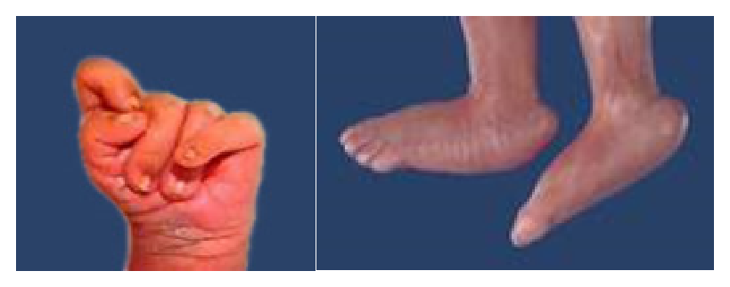
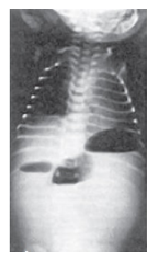
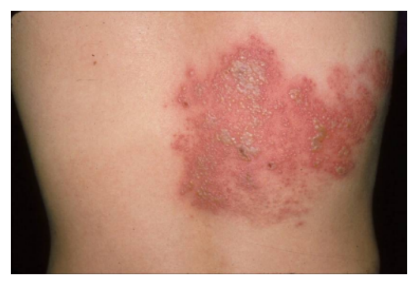
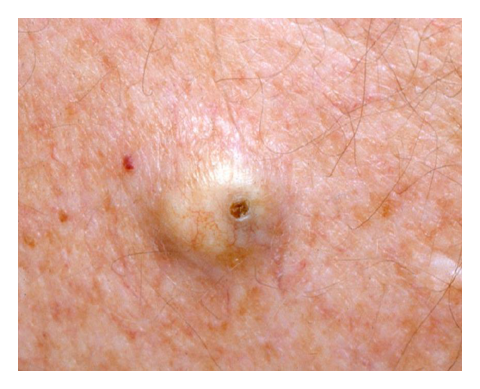
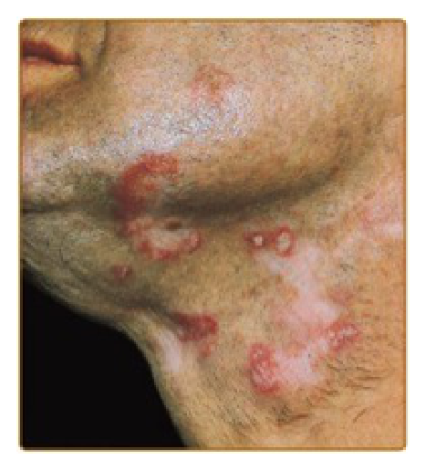
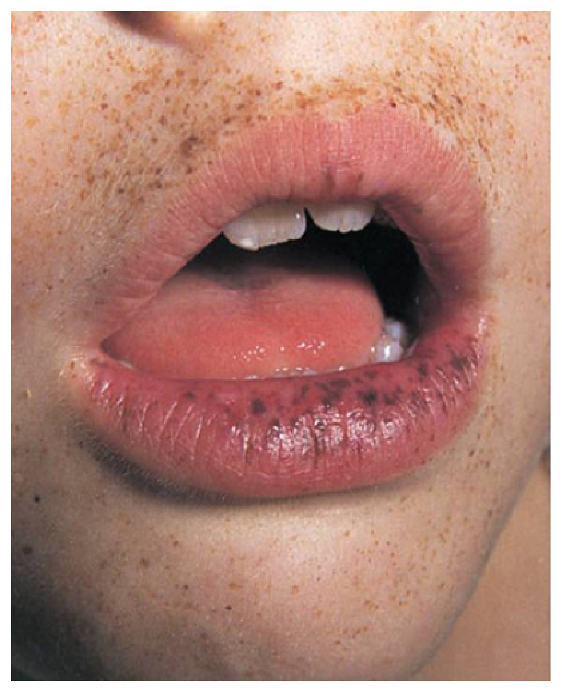
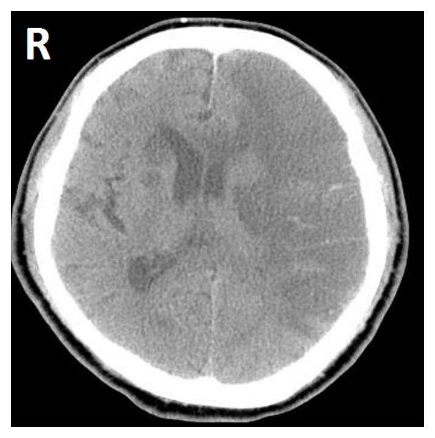
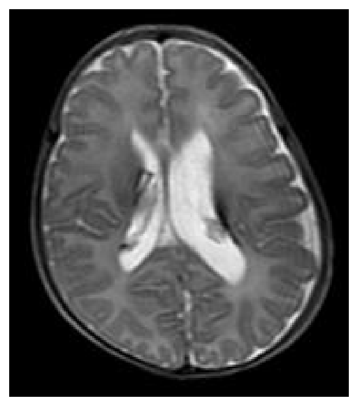
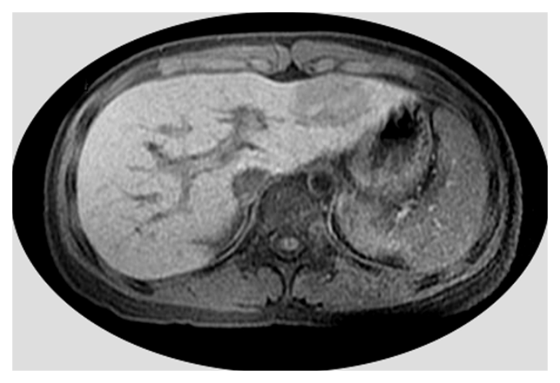
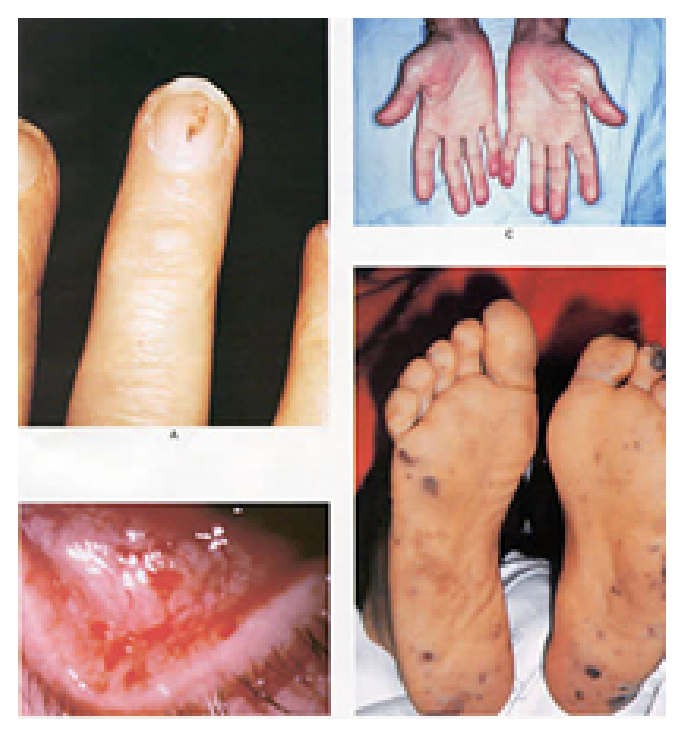

開卷有益 ／
醫師 ／ 醫學（四）（包括小兒科、皮膚科、神經科、精神科等科目及其相關臨床實例與醫學倫理） ／ 111 年第 1 次111 年第 1 次醫師醫學（四）（包括小兒科、皮膚科、神經科、精神科等科目及其相關臨床實例與醫學倫理）試題與答案
這一頁是民國 111 年第 1 次醫師醫學（四）（包括小兒科、皮膚科、神經科、精神科等科目及其相關臨床實例與醫學倫理）的整份歷屆試題，共 80 題，題目與標準答案出自考選部「國家考試試題及測驗式試題答案」開放資料，其中 80 題附有詳解。以下逐題列出題幹、選項與答案；要計時作答或記錄成績，請用線上練習。
考選部原始場次代碼：111020
線上作答這一科 →
全部 80 題
第 1 題
5歲男童高燒3天合併畏寒，咳嗽、喉嚨痛、頭痛、雙小腿痠痛、活動力下降，流感快篩呈現B型流感陽性。有關流行性感冒病毒的疫苗接種及治療敘述，何者錯誤？
（A） 流感疫苗只能施打在年紀1歲以上的孩童（B） 8歲以下初次接種流感疫苗的孩童，間隔1個月後須再施打第二劑（C） 可以考慮給與對抗流感藥物，如Neuraminidase inhibitor治療（D） 流感病毒感染抽血檢驗時可能會見到白血球偏低答案：（A）
詳解與考點 正解：流感疫苗適用年齡不是 1 歲起；（A）稱只能施打給 1 歲以上孩童錯誤。流感疫苗可自滿 6 個月開始接種，因此不能把最低年齡誤寫成 1 歲，故選 A。
B：未曾接種或接種史不足的幼童，接種季節性流感疫苗時可能需要相隔至少約 1 個月的 2 劑以建立免疫，敘述符合題意。
C：本例有流感症狀且快篩 B 型陽性，可評估使用神經胺酸酶抑制劑（neuraminidase inhibitor）等抗病毒藥物，敘述正確。
D：流感感染時可見白血球偏低，故白血球數並非一定上升；它看似不像細菌感染的典型血球反應，正是病毒感染常見的鑑別線索。
本題考點：流行性感冒（influenza）的疫苗接種（influenza vaccination）可自 6 個月大開始；神經胺酸酶抑制劑（neuraminidase inhibitor）為抗流感治療選項；病毒感染（viral infection）可出現白血球減少。
第 2 題
關於新生兒感染巨細胞病毒（Cytomegalovirus）的敘述，下列何者錯誤？
（A） 受到先天性巨細胞病毒感染的足月新生兒，約有90%會有臨床症狀（B） 足月健康的新生兒，即使母親血清反應陽性仍可哺餵母乳（C） 臨床症狀為肝脾腫大、黃疸、紅疹等（D） 對於沒有通過聽力篩檢的新生兒，須考慮先天性巨細胞病毒感染之可能性答案：（A）
詳解與考點 正解：先天性巨細胞病毒感染多數新生兒並無明顯症狀；（A）稱足月感染新生兒約 90% 有臨床症狀，將比例顛倒，故錯誤，選 A。
B：足月健康新生兒通常可接受母乳哺餵；是否需額外處置須依嬰兒早產狀態與臨床風險評估，但此敘述對足月健康兒為正確方向。
C：有症狀的先天性 CMV 可表現肝脾腫大、黃疸與皮疹等全身徵象，敘述正確。
D：先天性 CMV 是先天性感音神經性聽力損失的重要原因，未通過新生兒聽力篩檢時應納入鑑別診斷，敘述正確。
本題考點：先天性巨細胞病毒感染（congenital cytomegalovirus infection）多為無症狀；症狀性疾病可有肝脾腫大、黃疸與皮疹；新生兒聽力篩檢（newborn hearing screening）異常須考慮 CMV。
第 3 題
下列何者是學齡兒童細菌性咽喉炎最常見的病原？
（A） 嗜血桿菌（Haemophilus influenzae）（B） A型鏈球菌（Group A streptococcus）（C） 肺炎黴漿菌（Mycoplasma pneumoniae）（D） 肺炎鏈球菌（Streptococcus pneumoniae）答案：（B）
詳解與考點 正解：學齡兒童的細菌性咽喉炎最典型病原為 A 型鏈球菌。（B）Group A streptococcus 是此年齡層急性細菌性咽喉炎最常見的病原，故選 B。
A：嗜血桿菌可造成多種呼吸道感染，但不是學齡兒童細菌性咽喉炎最常見病原，故非答案。
C：肺炎黴漿菌可引起非典型肺炎，也可能有咽痛，但不能取代 A 型鏈球菌作為本題「最常見」答案。
D：肺炎鏈球菌常與肺炎、中耳炎及鼻竇炎相關，較不像典型 A 型鏈球菌咽喉炎的首要病原，故非答案。
本題考點：A 型鏈球菌（Group A streptococcus）是學齡兒童細菌性咽喉炎（bacterial pharyngitis）的重要病原；急性咽炎（acute pharyngitis）須區分病毒與細菌病因；非典型病原（atypical pathogen）不等於最常見病原。
第 4 題
下列何者不是腸病毒（Enteroviruses）感染的典型表現？
（A） 手足口症（Hand-foot-and-mouth disease）（B） 腦炎（Encephalitis）（C） 骨髓炎（Osteomyelitis）（D） 心肌炎（Myocarditis）答案：（C）
詳解與考點 正解：腸病毒具有多器官嗜性，但骨髓炎不是其典型臨床表現。（C）骨髓炎通常需優先考慮細菌感染，並非腸病毒感染的典型疾病，故選 C。
A：手足口症是腸病毒，尤其是 Coxsackievirus 與 Enterovirus 相關的常見表現，敘述正確。
B：部分腸病毒可侵犯中樞神經系統造成腦炎，雖非每位患者都會發生，仍是重要典型併發症。
D：腸病毒可造成心肌炎，尤其部分 Coxsackievirus 感染與心肌受累相關，敘述正確。
本題考點：腸病毒感染（enterovirus infection）可造成手足口症（hand-foot-and-mouth disease）；中樞神經侵犯（central nervous system involvement）可致腦炎；心肌炎（myocarditis）是重要心臟併發症，骨髓炎（osteomyelitis）則非典型表現。
第 5 題
下列何者是2歲兒童罹患感冒（Common cold）後最常見的併發症？
（A） 急性中耳炎（B） 細菌性肺炎（C） 急性鼻竇炎（D） 腦膜炎答案：（A）
詳解與考點 正解：幼兒感冒後最常見的細菌性併發症為急性中耳炎。（A）急性中耳炎常在上呼吸道病毒感染後因耳咽管功能受影響而發生，故選 A。
B：細菌性肺炎可以是感冒後的併發症，但發生頻率不及急性中耳炎，故非答案。
C：急性鼻竇炎也可能接續上呼吸道感染，但 2 歲兒童最常見的併發症仍是中耳炎，故非答案。
D：腦膜炎是嚴重但不常見的疾病，不能作為一般感冒後最常見併發症；它看似因症狀嚴重而令人警覺，卻非本題比較的流行病學答案。
本題考點：普通感冒（common cold）是上呼吸道病毒感染；急性中耳炎（acute otitis media）為幼兒常見併發症；耳咽管功能障礙（Eustachian tube dysfunction）促進中耳積液與感染。
第 6 題
下列何種肺炎鏈球菌疫苗的製程機轉，明顯與其他三種疫苗不同？
（A） 7價（B） 10價（C） 13價（D） 23價答案：（D）
詳解與考點 正解：7、10、13 價疫苗與 23 價疫苗的抗原製程不同。7 價、10 價及 13 價為肺炎鏈球菌結合型疫苗（pneumococcal conjugate vaccine, PCV），將莢膜多醣與載體蛋白結合；（D）23 價為多醣體疫苗（pneumococcal polysaccharide vaccine, PPSV），未採此結合製程，故選 D。
A：7 價疫苗屬結合型疫苗，與 10 價、13 價同為多醣－蛋白結合製程，故非答案。
B：10 價疫苗屬結合型疫苗，製程概念與 7 價、13 價相同，故非答案。
C：13 價疫苗屬結合型疫苗；它看似因血清型數更多而不同，實際上差別主要是涵蓋血清型數，非本題所問的結合製程，故非答案。
本題考點：肺炎鏈球菌結合型疫苗（pneumococcal conjugate vaccine, PCV）以多醣結合載體蛋白；肺炎鏈球菌多醣體疫苗（pneumococcal polysaccharide vaccine, PPSV）為未結合的多醣抗原；血清型涵蓋數（serotype coverage）與製程種類是不同概念。
第 7 題
下列何種檢查較不適宜用於單基因疾病（Single genetic disease）的分子診斷（Molecular diagnosis）？
（A） Linkage analysis（B） array Comparative Genomic Hybridization（aCGH）（C） DNA sequence-based analysis（D） Fluorescence in situ hybridization（FISH）答案：（D）
詳解與考點 正解：「單基因疾病」的分子診斷，通常要找單一基因的序列變異、家系連鎖標記或特定拷貝數變化。FISH 以螢光探針辨識較大的、已知位置染色體異常，解析度及可檢出的變異種類都受限，不能作為一般單基因疾病的較合適診斷工具，故選 D。
A：linkage analysis 可利用家系中與致病基因共分離的遺傳標記追蹤疾病基因；雖須有足夠家系資訊且不直接指出變異，但可用於單基因疾病定位或風險判定，非本題答案。
B：aCGH 可偵測基因體拷貝數變異，若單基因疾病由整個基因或部分外顯子缺失、重複造成，仍可提供分子層次證據；它看似較偏染色體檢查，但不是完全不能用於此類病因。
C：DNA sequence-based analysis 可直接檢出單一基因的點突變與小型插入、缺失，是單基因疾病分子診斷的核心方法，故非答案。
本題考點：單基因疾病分子診斷（molecular diagnosis of single-gene disorders）——定序（DNA sequence-based analysis）適於小型序列變異；連鎖分析（linkage analysis）依家系共分離判讀；螢光原位雜交（fluorescence in situ hybridization, FISH）主要偵測已知區域的較大染色體異常。
第 8 題
下列新生兒的肢體表現（如附圖），最可能是那一種診斷？

（A） Down syndrome（B） Edwards syndrome（C） Neonatal Marfan syndrome（D） Spinal muscular atrophy答案：（B）
詳解與考點 正解：附圖可見手部呈握拳、手指重疊的典型姿勢，足部則呈足跟突出、足底弧形隆起的搖椅底足（rocker-bottom feet）。此組合最符合 Edwards syndrome，即第 18 三體症（trisomy 18）；其常見肢體表現包括握拳合併手指重疊、搖椅底足與生長遲滯，故選 B。
A：Down syndrome 為第 21 三體症（trisomy 21），較典型的手部特徵是單一掌橫紋、短寬手與第五指彎曲症，不是附圖所示的重疊手指合併搖椅底足。
C：Neonatal Marfan syndrome 的特徵為細長指（arachnodactyly）、關節攣縮、蜘蛛樣肢體與心血管病變；其手指通常顯得細長，並非緊握且彼此重疊的手指姿勢，也不以搖椅底足為典型表現。
D：Spinal muscular atrophy 是下運動神經元疾病，嬰兒主要表現為對稱性肌無力、肌張力低下與腱反射減弱；雖可能有關節攣縮，但無法以附圖這種重疊手指與搖椅底足作為典型辨識特徵。
本題考點：Edwards syndrome（trisomy 18）——典型外觀包括握拳與手指重疊、搖椅底足及嚴重生長發育異常；搖椅底足（rocker-bottom feet）——足跟突出、足底呈弧形隆起，是多種先天異常中重要的形態學線索。
第 9 題
對於葡萄糖-六-磷酸鹽脫氫酵素缺乏症（G-6-PD缺乏症，俗稱蠶豆症）患者，下列何者可正常使用，不需特別避免？
（A） 乙醯胺酚（Acetaminophen）（B） 龍膽紫（Gentian violet）（C） 萘丸（Naphthalene）（D） 磺胺劑（Sulfa drug）答案：（A）
詳解與考點 正解：G-6-PD 缺乏紅血球無法充分產生還原型 glutathione，遇到氧化壓力可發生急性溶血。乙醯胺酚在一般治療使用下不是典型須避免的氧化誘發物，可正常使用，故選 A。
B：龍膽紫可造成氧化壓力，G-6-PD 缺乏者使用時有誘發溶血的顧慮，故不屬可不特別避免者。
C：萘丸暴露可產生氧化性代謝物；這個選項看似只是環境用品，卻是 G-6-PD 缺乏症應避免的經典誘因。
D：磺胺劑是常見的氧化性藥物，可在 G-6-PD 缺乏者誘發溶血，應避免或審慎替代。
本題考點：葡萄糖-6-磷酸鹽脫氫酵素缺乏症（glucose-6-phosphate dehydrogenase deficiency）——紅血球抗氧化能力下降，感染、蠶豆及部分氧化性藥物或化學物可誘發溶血。
第 10 題
5歲男童因常出現魚腥體味而就診，出生時基本新生兒篩檢並無異常，身體診察亦無特殊發現，父母描述這種刺鼻味道只在吃了蛋黃或豬肝後出現，下列何種疾病為最可能之診斷？
（A） 異戊酸血症（Isovaleric acidemia）（B） 苯酮尿症（Phenylketonuria）（C） 三甲基胺尿症（Trimethylaminuria）（D） 酪胺酸血症（Tyrosinemia）答案：（C）
詳解與考點 正解：吃蛋黃或豬肝後出現魚腥味，是膽鹼相關食物代謝成三甲基胺卻未能有效氧化的線索。三甲基胺累積並由汗液、尿液及呼氣排出，造成魚腥體味，最符合三甲基胺尿症，故選 C。
A：異戊酸血症常在代謝失代償時出現特殊汗腳味、嘔吐與酸中毒等表現，並非由蛋黃、豬肝後單純魚腥味所觸發。
B：苯酮尿症的典型氣味常描述為霉味或鼠尿味，且新生兒篩檢通常可偵測，與題幹不符。
D：酪胺酸血症可有肝腎病變或特定代謝異常，沒有此種與高膽鹼食物相關的魚腥體味。
本題考點：三甲基胺尿症（trimethylaminuria）——三甲基胺（trimethylamine）氧化代謝異常可產生魚腥味；含膽鹼食物如蛋黃、內臟可使症狀明顯。
第 11 題
新生兒出生1天後開始出現嘔吐症狀，嘔吐物含膽汁。身體診察發現腹部平坦，腹部X光片（如附圖）顯示中腹有3團腸氣而其他部位無腸氣出現。下列何者為最可能之診斷？

（A） 胃幽門狹窄（Pyloric stenosis）（B） 十二指腸閉鎖（Duodenal atresia）（C） 空腸閉鎖（Jejunal atresia）（D） 迴腸閉鎖（Ileum atresia）答案：（C）
詳解與考點 正解：新生兒於出生後第1天即出現膽汁性嘔吐，表示阻塞位置在 Vater 壺腹部遠端；腹部X光可見上腹至中腹有3個相連的腸氣團，遠端腸道完全沒有氣體，為「三泡徵象（triple-bubble sign）」。這代表胃、十二指腸及近端空腸充氣，而空腸閉鎖處使氣體無法通過至遠端腸道，最符合（C）空腸閉鎖，故選 C。
A：胃幽門狹窄通常在出生後數週才逐漸出現非膽汁性、噴射性嘔吐；阻塞位於膽汁進入十二指腸之前，因此不應出現膽汁性嘔吐，也不符合圖中的三泡徵象。
B：十二指腸閉鎖可造成出生早期膽汁性嘔吐，但典型腹部X光是胃與近端十二指腸擴張的「雙泡徵象（double-bubble sign）」，而非圖中可見的3團腸氣；本題多出的第3個氣泡支持阻塞位於更遠端的近端空腸。
D：迴腸閉鎖的阻塞位置較遠端，X光通常可見多個擴張的小腸腸袢與氣液平面，並非僅保留3個近端氣泡且完全無遠端腸氣的三泡型態。
本題考點：新生兒膽汁性嘔吐（bilious vomiting）提示膽道開口遠端的腸阻塞；三泡徵象（triple-bubble sign）為空腸閉鎖（jejunal atresia）的典型影像表現；雙泡徵象（double-bubble sign）則較支持十二指腸閉鎖（duodenal atresia）。
第 12 題
39週出生體重2,200公克的新生兒，在出生後第2個小時出現手腳震顫（Jitteriness）現象，當下檢驗血糖值為20 mg/dL。有關後續的處置，下列何者最為恰當？
（A） 2小時大時本來血糖就是最低值，可觀察下一個血糖值再做下一步決定（B） 配合母嬰親善政策，應儘快讓母親以母乳哺餵新生兒（C） 應先靜脈注射葡萄糖一次，接著再以葡萄糖輸注液緩慢滴注（D） 應置放臍靜脈導管後，以高濃度葡萄糖輸注液滴注答案：（C）
詳解與考點 正解：39 週但出生體重 2,200 g，且已出現 jitteriness 與血糖 20 mg/dL，代表有症狀的嚴重新生兒低血糖，不能只靠餵食或等待。應先以靜脈葡萄糖迅速矯正，再持續以含葡萄糖輸液維持血糖，故選 C。
A：出生後血糖可有生理性下降，但症狀合併 20 mg/dL 已不是可單純觀察的情境；延誤會增加神經傷害風險。
B：及早哺乳適合無症狀或較輕微的低血糖處置，但本題已有症狀及極低值，母乳吸收速度不足以取代立即靜脈治療。
D：高濃度葡萄糖通常不應作為一開始的周邊輸注策略；臍靜脈導管也非每位低血糖新生兒起始處置所必需，故不如（C）適當。
本題考點：新生兒低血糖（neonatal hypoglycemia）——出現神經症狀者須立即靜脈補充葡萄糖並持續監測；小於胎齡兒（small for gestational age infant）是高風險族群。
第 13 題
一位母親急產下一個2,000公克的新生兒。詢問母親病史，她懷孕過程未接受過產檢，也不知最後一次月經是什麼時候。如果要以新生兒狀況來做週數預估，則評估判斷的內容不包括下列何項？
（A） 眼睛到耳朵的距離（B） 乳頭與乳暈大小（C） 胎毛稀疏程度（D） 腳掌橫紋紋路答案：（A）
詳解與考點 正解：以新生兒外觀估計胎齡主要依成熟度徵象，例如乳房組織、胎毛及足底皺褶等。眼睛到耳朵的距離不是標準新生兒成熟度評估項目，故選 A。
B：乳頭與乳暈及其下方乳房組織會隨胎齡成熟而改變，是外觀成熟度評估的一部分。
C：胎毛在不同胎齡的分布與稀疏程度有規律變化，可作為估計成熟度的線索，故非答案。
D：腳掌橫紋會隨胎齡增加而延伸，是常用的身體成熟度指標；它看似只反映皮膚外觀，實際上是胎齡評估的重要項目。
本題考點：新生兒胎齡評估（gestational age assessment）——Ballard score 以身體與神經肌肉成熟度估計胎齡；乳房、胎毛及足底皺褶皆為身體成熟度線索。
第 14 題
剛出生的36週大嬰兒，嘴角一直流口水並冒出泡泡，醫師無法將口胃管順利放入。腹部X光片可見有胃與腸氣。下列何者為最可能之診斷？
（A） 單純食道氣管瘻管（B） 上段食道閉鎖合併下段食道氣管瘻管（C） 下段氣管閉鎖合併上段食道氣管瘻管（D） 上段氣管閉鎖合併下段食道氣管瘻管答案：（B）
詳解與考點 正解：出生後流口水、口胃管無法通過，指出食道近端閉鎖；腹部卻有胃與腸氣，表示空氣可由氣管經遠端瘻管進入胃腸道。兩項線索合併最符合上段食道閉鎖合併下段食道氣管瘻管，故選 B。
A：單純食道氣管瘻管沒有食道閉鎖，口胃管通常可通過，不能解釋本題的置管失敗。
C：下段氣管閉鎖是嚴重氣道阻塞，出生後會以呼吸道問題為主，亦非「食道近端閉鎖加胃腸氣」的典型組合。
D：上段氣管閉鎖同樣不能合理說明無法通過口胃管的主因；題幹的關鍵是食道閉鎖而非氣管閉鎖。
本題考點：食道閉鎖合併氣管食道瘻管（esophageal atresia with tracheoesophageal fistula）——無法通過口胃管提示食道閉鎖；腹部有氣提示遠端瘻管存在。
第 15 題
下列何種疾病所導致的嘔吐為非膽汁性嘔吐（Nonbilious emesis）？
（A） 增生性胃幽門狹窄（Hypertrophic pyloric stenosis）（B） 十二指腸閉鎖（Duodenal atresia）（C） 腸道旋轉不良合併扭轉（Intestinal malrotation with volvulus）（D） 先天性巨結腸症（Hirschsprung disease）答案：（A）
詳解與考點 正解：膽汁由十二指腸乳頭進入腸道；阻塞若在此近端，嘔吐物尚未混入膽汁。增生性胃幽門狹窄位於胃出口，故典型為噴射性非膽汁性嘔吐，故選 A。
B：十二指腸閉鎖多在膽汁進入腸道的遠端，常造成膽汁性嘔吐，並可見雙泡徵象，故非答案。
C：腸旋轉不良合併腸扭轉常以急性膽汁性嘔吐表現；它看似也會嘔吐，但膽汁性嘔吐正是需緊急警覺腸缺血的線索。
D：先天性巨結腸症主要是遠端腸道阻塞與延遲排胎便，若嘔吐通常偏膽汁性而非幽門狹窄般典型的非膽汁性。
本題考點：嬰兒嘔吐鑑別（infantile vomiting）——非膽汁性嘔吐提示阻塞位於十二指腸乳頭近端；肥厚性幽門狹窄（hypertrophic pyloric stenosis）是典型病因。
第 16 題
關於嬰幼兒常見造成維生素及營養素缺乏的原因，下列何者正確？
（A） 相較於一般飲食的兒童，吃全素的兒童容易缺乏維生素B12及維生素D（B） 相較於餵配方奶的嬰幼兒，餵母乳的嬰幼兒不容易缺乏維生素K（C） 相較於餵母乳的嬰幼兒，餵配方奶的嬰幼兒容易缺乏鐵質和維生素D（D） 膽汁淤積症的病童容易缺乏水溶性維生素及維生素B群答案：（A）
詳解與考點 正解：全素飲食排除動物性食物，維生素 B12 的天然來源尤其有限；若飲食未強化或未補充，也可能不足維生素 D。故全素兒童較易缺乏維生素 B12 及維生素 D，選 A。
B：母乳中的維生素 K 含量低，新生兒需要常規補充維生素 K 預防出血，不能說母乳哺餵者較不易缺乏。
C：配方奶通常含鐵與維生素 D 強化，相較之下全母乳嬰兒才較需注意鐵與維生素 D 補充，故此選項方向顛倒。
D：膽汁淤積會妨礙脂肪吸收，因此易缺乏的是脂溶性維生素 A、D、E、K，而非水溶性維生素及 B 群。
本題考點：兒童營養缺乏（pediatric nutritional deficiency）——全素飲食需注意維生素 B12；母乳嬰兒需留意維生素 D 與鐵；膽汁淤積（cholestasis）造成脂溶性維生素缺乏。
第 17 題
關於嬰幼兒生長遲滯（Failure to thrive）的敘述，下列何者錯誤？
（A） 發生營養不良時首先造成體重增加不良，幾個月後才會影響到身高（B） 有超過一半以上生長遲滯的病童，經門診或住院檢查可找出病因（C） 為了追趕性生長所需，其熱量和蛋白質的攝取可能需達同年齡層兒童的1.5倍（D） 進入追趕性生長期的前兩週，其體重增加的速度可比同年齡層兒童多出2到3倍答案：（B）
詳解與考點 正解：題目問錯誤敘述。生長遲滯多數與攝取不足、餵食互動或社會心理因素有關，完整門診或住院檢查並不能在超過半數個案找出特定器質性病因；（B）誇大可找出病因的比例，故為錯誤選項。
A：營養不足通常先影響體重增加，持續較久才影響身高，最後才可能影響頭圍，符合生長受影響的常見順序。
C：追趕性生長需較高的熱量與蛋白質供應，以同齡需求約 1.5 倍作為可能的營養規劃方向合理，非答案。
D：開始營養復原後早期體重可快速上升，速度高於同齡兒童是追趕性生長的表現，故非錯誤敘述。
本題考點：生長遲滯（failure to thrive）——體重先受影響，再影響身高；追趕性生長（catch-up growth）需要充足熱量與蛋白質；多數個案不會找到單一器質性病因。
第 18 題
1個月大全母奶餵哺的男嬰因為延長性黃疸（prolonged jaundice）被帶至門診，下列處置何者正確？
（A） 告知家屬此為母乳性黃疸，可先暫停哺餵母乳2天，無需採取腳跟微量血檢測總膽紅素值（B） 若家屬表示男嬰的大便顏色為淡黃色，可暫時不採取腳跟血檢測總膽紅素值，觀察即可（C） 若採取腳跟血檢測直接與總膽紅素值之比例（Direct-to-total bilirubin）為3%，總膽紅素值12 mg/dL，最好住院照光治療（D） 若採取腳跟血檢測直接與總膽紅素值之比例（Direct-to-total bilirubin）為21%，總膽紅素值10 mg/dL，應儘快轉診或住院檢查答案：（D）
詳解與考點 正解：1 個月大的延長性黃疸不能先假定為良性母乳性黃疸，必須區分未結合與結合型高膽紅素血症。直接膽紅素占總膽紅素 21%，且總膽紅素為 10 mg/dL，直接膽紅素約為 2.1 mg/dL，比例與絕對值皆提示膽汁鬱積，應儘快轉診或住院檢查，故選 D。
A：母乳性黃疸是排除其他病因後的診斷；未測膽紅素即停母乳既不能完成評估，也可能不必要地中斷哺餵。
B：家屬所述淡黃色糞便不能取代膽紅素分型；延長性黃疸仍須檢測總膽紅素與直接膽紅素，故不能只觀察。
C：直接／總膽紅素為 3%，總膽紅素 12 mg/dL 時，直接膽紅素約 0.36 mg/dL，並非結合型高膽紅素血症；是否照光仍須依年齡與完整臨床評估，不能由這個比例直接推論最好住院照光。
本題考點：延長性新生兒黃疸（prolonged neonatal jaundice）——需檢測總膽紅素與直接膽紅素；結合型高膽紅素血症（conjugated hyperbilirubinemia）提示膽汁鬱積，須儘速評估病因。
第 19 題
7個月大的男嬰因發燒、嘔吐和大量水樣性腹瀉持續3天之久而來急診。經量測，體重為7.5公斤（上個月預防注射時體重8公斤），嘴唇乾裂，尿量減少，哭沒有眼淚。常規血液檢查正常，血液生化檢查中電解質正常，糞便檢查正常，目前哺育母乳，以下何種處置最為適當？
（A） 給與稀釋運動飲料500c.c.於4小時內喝完（B） 停止哺餵母乳，給與無乳糖配方奶（C） 給與止瀉藥如Loperamide（Imodium）（D） 矯正脫水後立刻給與進食（Early feeding）答案：（D）
詳解與考點 正解：7 個月嬰兒腹瀉後體重由 8 kg 降至 7.5 kg，約減少 0.5/8=6.25%，再合併口乾、少尿、無淚，需先以適當口服補液矯正脫水。脫水改善後應儘早恢復進食並持續母乳，能維持營養與腸黏膜修復，故選 D。
A：運動飲料的糖與電解質比例不是嬰兒腹瀉補液所需的標準口服補液配方，任意大量給予可能使滲透負荷不適當，故非最佳處置。
B：急性水樣腹瀉時通常應持續母乳；無乳糖配方奶不是每位母乳嬰兒都需要，停止母乳反而失去營養與保護作用。
C：loperamide 不建議常規用於嬰幼兒急性腹瀉，可能造成腸蠕動抑制及不良反應，故非答案。
本題考點：兒童急性腸胃炎（acute gastroenteritis）——以口服補液（oral rehydration therapy）矯正脫水；持續母乳並早期進食（early feeding）；避免常規止瀉藥。
第 20 題
6歲女童為原發性微小腎病變患者，對類固醇反應不好，此次因復發住院，正接受類固醇脈衝治療，今突然發生「泛發性強直–陣攣發作（Generalized tonic-clonic seizures）」，其抽搐原因最不可能是下列何者？
（A） 顱內出血（Intracranial hemorrhage）（B） 低血鈉（Hyponatremia）（C） 可逆性後腦病變症候群（Posterior reversible encephalopathy syndrome, PRES）（D） 腦部血管栓塞（Cerebral venous sinus thrombosis）答案：（A）
詳解與考點 正解：腎病症候群復發加上類固醇脈衝治療時，抽搐須優先考慮水電解質異常、血栓及高血壓相關腦病變。低血鈉、PRES 與腦靜脈竇栓塞皆有明確機轉；相較之下顱內出血不是這個臨床組合最典型的抽搐原因，故選 A。
B：低血鈉可使血漿滲透壓降低、腦水腫並誘發全身性抽搐，是需要立即排除的可逆原因。
C：PRES 可與高血壓、腎病及免疫抑制治療相關，常表現為癲癇發作、頭痛或視覺症狀；它看似罕見，卻正是此情境的重要鑑別。
D：腎病症候群的高凝狀態增加血栓風險，腦靜脈竇栓塞可造成癲癇發作，故不能視為最不可能。
本題考點：腎病症候群神經併發症（neurologic complications of nephrotic syndrome）——低血鈉（hyponatremia）、可逆性後腦病變症候群（posterior reversible encephalopathy syndrome, PRES）及腦靜脈竇栓塞（cerebral venous sinus thrombosis）可引起抽搐。
第 21 題
5歲女童接受化學藥物治療一段期間後，發現有輕微蛋白尿與尿糖現象，抽血檢查顯示血中鉀離子為2.8mmol/L，鈉離子為146 mmol/L，氯離子為115 mmol/L。血液pH值為7.2，重碳酸根離子（HCO3-）為18mmol/L，BE：-4.5 mmol/L，下列何者為最可能之診斷？
（A） 第四型腎小管酸血症（Renal tubular acidosis, type IV）（B） Fanconi症候群（Fanconi syndrome）（C） Bartter氏症候群（Bartter syndrome）（D） 吉特曼症候群（Gitelman syndrome）答案：（B）
詳解與考點 正解：化療後出現蛋白尿、尿糖、低血鉀與代謝性酸中毒，表示近端腎小管廣泛重吸收功能受損。其陰離子間隙為 146－（115+18）＝13 mmol/L，屬高氯性、正常陰離子間隙代謝性酸中毒；合併尿糖與蛋白尿最符合 Fanconi 症候群，故選 B。
A：第四型腎小管酸血症的特徵較偏向低醛固酮相關的高血鉀性酸中毒，與本題鉀 2.8 mmol/L 及近端小管尿糖、蛋白尿不符。
C：Bartter 症候群是亨利氏環鹽類利尿劑樣缺陷，常見低血鉀性代謝性鹼中毒，不會以尿糖與蛋白尿為主。
D：Gitelman 症候群亦多為低血鉀性代謝性鹼中毒，病灶在遠曲小管；它看似可造成低鉀，卻不能解釋本題的代謝性酸中毒及近端小管溶質流失。
本題考點：Fanconi 症候群（Fanconi syndrome）——近端腎小管重吸收障礙造成尿糖、蛋白尿、磷酸鹽及重碳酸根流失；近端腎小管酸血症（proximal renal tubular acidosis）呈正常陰離子間隙代謝性酸中毒。
第 22 題
下列何者在嬰兒受虐性腦傷中最不常見？
（A） 硬腦膜下出血（Subdural hemorrhage）（B） 視網膜出血（Retinal hemorrhage）（C） 腦水腫（Brain edema）（D） 小腦出血（Cerebellar hemorrhage）答案：（D）
詳解與考點 正解：嬰兒受虐性腦傷常由劇烈搖晃及撞擊造成，典型顱內與眼底發現為硬腦膜下出血、視網膜出血及腦水腫。小腦出血不是這個典型受傷型態中常見的表現，故選 D。
A：硬腦膜下出血可由橋靜脈受牽拉造成，是受虐性腦傷的重要常見發現，故非答案。
B：視網膜出血與加速—減速傷害相關，是評估受虐性腦傷時須注意的典型線索。
C：腦水腫可由初始腦傷及繼發性缺氧缺血造成，在嚴重受虐性腦傷中可見，故非最不常見。
本題考點：受虐性腦傷（abusive head trauma）——常見硬腦膜下出血（subdural hemorrhage）、視網膜出血（retinal hemorrhage）及腦水腫（brain edema）；須結合病史、理學檢查與影像整體判讀。
第 23 題
下列關於單純型熱性痙攣之處置何者正確？
（A） 為避免復發，建議預防性使用抗癲癇藥（B） 使用退燒藥物可以降低熱性痙攣再發生的風險（C） 長期抗癲癇藥物之使用可預防患者未來發生癲癇（D） 患者不需接受腦電波檢查答案：（D）
詳解與考點 正解：單純型熱性痙攣是神經發展正常兒童在發燒時的全身性、短暫且 24 小時內單次發作。臨床恢復正常且無非典型特徵時，腦電波檢查不會改變處置，也不需常規安排，故選 D。
A：為避免再發而長期預防性使用抗癲癇藥，藥物不良反應通常大於有限的預防效益，不建議常規使用。
B：退燒藥可改善孩子不適，卻不能可靠降低未來熱性痙攣的再發風險；這是容易把「退燒」誤當「防痙攣」的誘答。
C：長期抗癲癇藥也沒有證據可預防日後發展成癲癇，故不應以此作為常規處置目的。
本題考點：單純型熱性痙攣（simple febrile seizure）——多採衛教與適當發燒照護；不常規做腦電圖（electroencephalography, EEG），也不常規長期使用抗癲癇藥。
第 24 題
11歲女童經醫師確診為甲狀腺功能亢進，下列有關症狀、實驗室檢查及治療之描述何者最不適當？
（A） 食慾會減退（B） 短期內會快速生長（C） Free T4 3.2 ng/dL、T4 18.2 μg/dL、TSH＜0.05 mIU/L（D） 應開始使用Methimazole治療答案：（A）
詳解與考點 正解：甲狀腺功能亢進使基礎代謝率升高，兒童常見食慾增加、體重減輕、心悸及生長加速。選項稱食慾減退與此生理方向不合，是最不適當者，故選 A。
B：甲狀腺素過多可加速骨成熟與短期生長速度，因此短期快速生長可出現，非答案。
C：Free T4 與總 T4 升高、TSH 被抑制，是原發性甲狀腺功能亢進的典型檢驗組合，故敘述適當。
D：Methimazole 是兒童甲狀腺功能亢進常用的抗甲狀腺藥物；它看似只針對檢驗異常，但實際是降低甲狀腺素合成的治療選擇。
本題考點：兒童甲狀腺功能亢進（pediatric hyperthyroidism）——T4 升高與 TSH 下降；常見代謝亢進與生長加速；Methimazole 為抗甲狀腺治療。
第 25 題
兒童第一型糖尿病（Type 1 diabetes mellitus, T1DM）與第二型糖尿病相比較，下列何者最不正確？
（A） T1DM病童體型通常較為消瘦（B） T1DM病童首次發病時，較常合併酮酸中毒（C） T1DM病童較不常合併其他自體免疫疾病（D） T1DM病童通常需要注射胰島素治療答案：（C）
詳解與考點 正解：第一型糖尿病是自體免疫性 β 細胞破壞，因此病童反而較容易合併其他自體免疫疾病，例如自體免疫甲狀腺疾病或乳糜瀉。選項稱較不常合併其他自體免疫疾病，方向錯誤，故選 C。
A：第一型糖尿病發病時因胰島素不足與體重下降，體型常較消瘦；雖非每位病童皆然，作為與第二型糖尿病的典型比較仍正確。
B：第一型糖尿病可因絕對胰島素不足而以糖尿病酮酸中毒首次表現，較第二型常見，故非答案。
D：第一型糖尿病的胰島素分泌不足需要外源性胰島素治療，這是疾病機轉決定的治療需求。
本題考點：第一型糖尿病（type 1 diabetes mellitus, T1DM）——自體免疫性 β 細胞破壞造成胰島素缺乏；常需胰島素治療，並較易與其他自體免疫疾病共存。
第 26 題
關於川崎氏症（Kawasaki disease）的描述，下列何者錯誤？
（A） 發生的原因目前仍然不明，但是一些證據顯示可能跟感染有關（B） 比較常發生在年齡5歲以下的兒童身上（C） 鑑別診斷包括猩紅熱、麻疹、腺病毒感染、青少年原發性系統型關節炎與藥物過敏等（D） 急性發燒期治療包括阿斯匹林（Aspirin）5 mg/kg 與免疫球蛋白（Immunoglobulin）2 g/kg答案：（D）
詳解與考點 正解：依本題的傳統命題口徑，川崎氏症急性發燒期以免疫球蛋白 2 g/kg 與較高劑量阿斯匹林的抗發炎用法區分；5 mg/kg 則被視為退燒後的低劑量抗血小板用法，因此（D）錯誤，故選 D。現行實務對急性期阿斯匹林劑量並不一致，低劑量合併免疫球蛋白亦有支持，不能將 5 mg/kg 視為急性期絕對不可使用。
A：川崎氏症病因尚未完全釐清，感染或感染觸發免疫反應是研究中的重要假說，敘述正確。
B：川崎氏症最常見於 5 歲以下兒童，故非錯誤選項。
C：猩紅熱、麻疹、腺病毒感染、全身型幼年特發性關節炎及藥物過敏都可有發燒、皮疹或黏膜表現，確實須納入鑑別診斷。
本題考點：川崎氏症（Kawasaki disease）——主要發生於幼兒，急性期以靜脈注射免疫球蛋白（intravenous immunoglobulin, IVIG）治療；阿斯匹林在急性抗發炎與後續抗血小板階段的用途及劑量概念不同。
第 27 題
有關兒童異位性皮膚炎（Atopic dermatitis）的臨床表現及照護，下列敘述何者最不恰當？
（A） 在嬰幼兒時期，包尿布區域不是典型好發的部位（B） 兒童常因為癢的感受而搔抓（C） 由於皮膚敏感，不建議泡澡保濕（D） 兒童年紀漸大後，四肢屈側是好發的部位答案：（C）
詳解與考點 正解：異位性皮膚炎的基礎照護是維持皮膚屏障，短時間溫水洗澡後立即使用潤膚劑，有助補充角質層水分。選項稱因皮膚敏感而不建議泡澡保濕，與正確照護相反，是最不恰當者，故選 C。
A：嬰幼兒常見臉部、頭皮及四肢伸側病灶，包尿布區因濕潤與遮蔽通常不是典型好發處，敘述合理。
B：搔癢是異位性皮膚炎的核心症狀，搔抓又會惡化發炎與皮膚屏障受損，故正確。
D：年紀較大的兒童病灶常轉為肘窩、膕窩等四肢屈側，符合典型年齡分布。
本題考點：異位性皮膚炎（atopic dermatitis）——搔癢與皮膚屏障缺陷是核心；不同年齡有不同好發部位；洗澡後立即保濕（emollient therapy）是基礎照護。
第 28 題
有關預防嬰幼兒過敏的觀念，下列敘述何者不恰當？
（A） 孕婦飲食可不需避免高過敏食物（例如海鮮、花生等）（B） 嬰幼兒6個月大以後再添加副食品可以預防過敏（C） 母乳哺育對於預防氣喘的效果不確定（D） 目前國際指引尚未建議嬰幼兒常規性使用益生菌來預防過敏答案：（B）
詳解與考點 正解：副食品延後到 6 個月以後才添加，並不是預防過敏的有效策略；現代過敏預防觀念不支持為避免過敏而無故延後適齡食物引介。故（B）不恰當，選 B。
A：孕婦不需常規避免海鮮、花生等高過敏食物來預防嬰兒過敏；沒有特定過敏情況時，過度限制飲食不具一般預防效益。
C：母乳哺育的益處明確，但其對預防日後氣喘的效果並非確定，敘述符合證據不確定性。
D：益生菌是否預防過敏受菌株、族群與結果指標影響，並無所有嬰幼兒皆應常規使用的國際一致建議，故非答案。
本題考點：嬰幼兒過敏預防（allergy prevention）——不常規限制孕期飲食；不以延後副食品（complementary feeding）作為預防策略；益生菌（probiotics）不作為所有嬰幼兒的常規預防措施。
第 29 題
下列何者是兒童後天性再生不良性貧血最常見的病因？
（A） 藥物（B） 不明原因（C） 化學毒物（D） 病毒感染答案：（B）
詳解與考點 正解：兒童「後天性」再生不良性貧血最常見的病因。再生不良性貧血（aplastic anemia）是造血幹細胞衰竭造成的全血球減少；雖可由藥物、毒物或感染引起，但多數兒童後天病例無法找出明確誘因，歸類為特發性（idiopathic），故選 B。
A：藥物可造成骨髓抑制或罕見的再生不良性貧血，但不是兒童後天性病例最常見的病因。它看似合理，是因藥物確為重要可辨識誘因；然而題目問的是整體最常見原因。
C：化學毒物暴露可傷害骨髓造血幹細胞，是次發性再生不良性貧血的可能原因，但臨床上大多數兒童病例仍無法歸因於特定毒物。
D：某些病毒感染可與再生不良性貧血相關，但不能解釋多數後天性病例，故非最常見病因。
本題考點：再生不良性貧血（aplastic anemia）是骨髓造血衰竭與全血球減少的疾病；後天性病例可有藥物、毒物、感染等次發因素，但多數屬特發性（idiopathic）。
第 30 題
下列那一項疾病較不會以小球性貧血（Microcytic anemia）來表現？
（A） 缺鐵性貧血（Iron deficiency anemia）（B） 再生不良性貧血（Aplastic anemia）（C） 海洋性貧血（Thalassemia）（D） 鉛中毒（Lead poisoning）答案：（B）
詳解與考點 正解：「較不會」表現為小球性貧血（microcytic anemia）。再生不良性貧血是骨髓造血衰竭，典型血球大小多為正球性，也可偏大球性，並非以小球性為主要表現，故選 B。
A：缺鐵使血紅素合成不足，紅血球在分裂過程中持續縮小，典型為小球性低色素性貧血，故不是答案。
C：海洋性貧血（thalassemia）因珠蛋白鏈合成異常，常見明顯小球性貧血；即使缺鐵指標正常仍可有小球性，是常見鑑別點。
D：鉛中毒干擾血紅素合成，可能出現小球性貧血與嗜鹼性點彩，故仍會以小球性貧血表現。
本題考點：平均紅血球容積（mean corpuscular volume, MCV）用於貧血分類；小球性貧血常見於缺鐵、海洋性貧血與血紅素合成受干擾，造血衰竭的再生不良性貧血則通常不是小球性。
第 31 題
9個月大女嬰嘴唇被發現有發紺的現象，經診斷為先天性心臟病法洛氏四重症（Tetralogy of Fallot, TOF）。下列何種機轉是造成病童直到9個月才出現明顯發紺現象？
（A） 動脈導管持續開放（B） 卵圓孔延遲關閉（C） 心室中膈缺損產生心臟衰竭（D） 右心室代償肥厚造成嚴重的肺動脈狹窄答案：（D）
詳解與考點 正解：法洛氏四重症（tetralogy of Fallot, TOF）在 9 個月才出現明顯發紺。TOF 的發紺程度主要取決於右心室流出道阻塞；隨成長，漏斗部肌肉肥厚或動態收縮可使阻塞加重、右向左分流增加，才會變得明顯發紺。右心室肥厚主要是長期壓力負荷的結果，故選 D。
A：動脈導管持續開放可提供肺循環與體循環間的血流通道，但不是 TOF 延後發紺的典型機轉，也不能解釋阻塞隨月齡加劇。
B：卵圓孔延遲關閉屬心房層級交通，與 TOF 的核心血行力學問題不符；TOF 的右向左分流主要經由心室中隔缺損並受右心室流出道阻塞影響。
C：心室中隔缺損是 TOF 的組成之一，但單純心室中隔缺損常因左向右分流造成肺血流增加與心衰竭，不是延後出現發紺的原因。
本題考點：法洛氏四重症（tetralogy of Fallot）的發紺由右心室流出道阻塞（right ventricular outflow tract obstruction）嚴重度決定；阻塞加重會增加右向左分流（right-to-left shunt）與發紺。
第 32 題
2天大的足月新生兒，接受例行性的血氧篩檢時發現雙側下肢的血氧飽和度是90%，但臨床上活動力正常、進食狀況良好，下列那一種先天性心臟病最有可能出現此現象？
（A） 心室中膈缺損（Ventricular septal defect）（B） 完全型心內膜墊缺損（Complete form endocardial cushion defect）（C） 大血管轉位（D-transposition of the great arteries）（D） 開放性動脈導管（Patent ductus arteriosus）答案：（C）
詳解與考點 正解：新生兒血氧篩檢發現低血氧但外觀與餵食尚佳，可見於大血管轉位（D-transposition of the great arteries）。其肺循環與體循環平行而非串聯，須靠心房中隔缺損、心室中隔缺損或動脈導管等交通處的血液混合維生；題幹不足以判定實際混合通道，故選 C。
A：單純心室中隔缺損多為左向右分流，出生後早期肺血管阻力仍高，通常不會造成顯著低血氧。
B：完全型心內膜墊缺損多造成左向右分流與肺血流增加，早期不以單獨的下肢低血氧為典型表現。
D：開放性動脈導管本身常為左向右分流，通常不致使下肢血氧飽和度下降；它在大血管轉位中反而可暫時幫助血液混合，因此容易成為誘答。
本題考點：新生兒血氧篩檢（pulse oximetry screening）用於偵測重症先天性心臟病；大血管轉位（D-transposition of the great arteries）使兩循環平行，生存仰賴兩循環間的血液混合。
第 33 題
有關部分肺靜脈回流異常（Partial anomalous pulmonary venous return）之血行力學變化（Hemodynamicchange），與下列何種先天性心臟病較相似？
（A） 心室中隔缺損（Ventricular septal defect）（B） 心房中隔缺損（Atrial septal defect）（C） 肺動脈瓣狹窄（Pulmonary valve stenosis）（D） 開放性動脈導管（Patent ductus arteriosus）答案：（B）
詳解與考點 正解：部分肺靜脈回流異常（partial anomalous pulmonary venous return）造成的血行力學。部分含氧肺靜脈血回流到右心房或體靜脈，會使右心房、右心室與肺循環出現容量負荷增加，形成左向右分流的生理效果，最像心房中隔缺損（atrial septal defect），故選 B。
A：心室中隔缺損也可造成左向右分流，但分流位置在心室層級，早期對心室壓力與肺血流的影響型態不同於肺靜脈異常回流所致的右心容量負荷。
C：肺動脈瓣狹窄是右心室流出道阻塞，主要造成右心室壓力負荷，不是肺血流增加的左向右分流生理。
D：開放性動脈導管的分流發生在主動脈與肺動脈之間，雖也可使肺血流增加，但與部分肺靜脈回流異常最相近的右心容量負荷模式仍是心房中隔缺損。
本題考點：部分肺靜脈回流異常（partial anomalous pulmonary venous return）使含氧血回到右心而造成左向右分流（left-to-right shunt）；心房中隔缺損（atrial septal defect）同樣常見右心容量負荷增加。
第 34 題
關於異位性皮膚炎的敘述，下列何者錯誤？
（A） 皮膚的屏障功能常有缺陷（B） 皮膚金黃色葡萄球菌菌落數常會增加（C） 血中IgE上升是診斷必須的生物標記（D） 臨床病程與情緒壓力及環境有關答案：（C）
詳解與考點 正解：本題問何者錯誤，關鍵是異位性皮膚炎（atopic dermatitis）的診斷。異位性皮膚炎以病史、典型皮疹形態與分布、反覆病程等臨床表現診斷；血中 IgE 可升高但並非所有病人都升高，也不是必要生物標記，故錯誤的是 C。
A：異位性皮膚炎常有表皮屏障功能缺陷，導致水分散失與過敏原、刺激物較容易穿透，敘述正確，故不是答案。
B：病灶常有金黃色葡萄球菌（Staphylococcus aureus）定殖增加，可能加劇發炎與感染風險，敘述正確，故不是答案。
D：病程可受情緒壓力、氣候、刺激物與過敏原等環境因素影響，敘述正確，故不是答案。
本題考點：異位性皮膚炎（atopic dermatitis）是以臨床表現診斷的慢性發炎性皮膚病；皮膚屏障缺陷（skin barrier dysfunction）與金黃色葡萄球菌定殖增加常見，但總 IgE 並非必要診斷條件。
第 35 題
下列何者不會引起落屑性皮膚炎（exfoliative dermatitis）？
（A） 毛囊炎（folliculitis）（B） 異位性皮膚炎（atopic dermatitis）（C） 乾癬（psoriasis）（D） 皮膚T細胞淋巴癌（cutaneous T cell lymphoma）答案：（A）
詳解與考點 正解：「不會」引起落屑性皮膚炎（exfoliative dermatitis），即全身廣泛紅斑與脫屑。毛囊炎通常是局限於毛囊的表淺細菌感染，不是全身性紅皮症的典型病因，故選 A。
B：異位性皮膚炎在嚴重、廣泛發作時可進展為紅皮症與落屑性皮膚炎，故會是可能背景疾病。
C：乾癬可在廣泛惡化時形成紅皮性乾癬，出現全身紅斑與脫屑，故不是答案。
D：皮膚 T 細胞淋巴瘤（cutaneous T-cell lymphoma）可表現為慢性紅皮症，尤其是較廣泛的疾病型態，故可引起落屑性皮膚炎。
本題考點：落屑性皮膚炎（exfoliative dermatitis）或紅皮症（erythroderma）是全身性皮膚發炎表現；常見病因包括乾癬（psoriasis）、異位性皮膚炎（atopic dermatitis）、藥物反應與皮膚淋巴瘤，而非局限性毛囊炎。
第 36 題
有關過敏性接觸性皮膚炎（allergic contact dermatitis）的免疫機轉敘述，下列何者正確？
（A） 接觸過敏原其分子量多大於500 Daltons的親水性物質（B） 表皮的抗原表現（antigen-presenting）角色主要由藍格罕氏細胞（Langerhans cells）擔任（C） 淋巴結中的T細胞在受到抗原刺激後會分化成Mast cells，並且會回到皮膚中（D） 致敏期（sensitization phase）大約需要30~35天，且此時期症狀嚴重答案：（B）
詳解與考點 正解：過敏性接觸性皮膚炎（allergic contact dermatitis）的抗原呈現與延遲型免疫反應。接觸性過敏原進入表皮後，藍格罕氏細胞（Langerhans cells）攝取、處理並呈現抗原給 T 細胞，啟動致敏與後續再暴露反應，故選 B。
A：接觸性過敏原多為可穿透角質層的小分子脂溶性半抗原（hapten），不是分子量大於 500 Daltons 的親水性物質；「小分子才能穿透皮膚」是此題的關鍵判準。
C：T 細胞受抗原刺激後會形成效應與記憶 T 細胞，不會分化成肥大細胞（mast cells）；兩者屬不同細胞系統。
D：致敏期通常尚未有明顯臨床症狀；症狀主要在再次接觸抗原後的誘發期出現，因此此敘述把致敏與誘發階段混淆。
本題考點：過敏性接觸性皮膚炎（allergic contact dermatitis）屬第四型過敏反應（type IV hypersensitivity）；藍格罕氏細胞（Langerhans cells）是表皮重要抗原呈現細胞，致敏後由 T 細胞媒介再暴露時的皮膚炎。
第 37 題
70歲男性，從四天前右背和右腹出現如圖所示的水疱病變，晚上疼痛無法入睡，他以前未曾長過類似皮疹。最可能的診斷為：

（A） 接觸性皮膚炎（contact dermatitis）（B） 單純性疱疹（herpes simplex）（C） 膿痂疹（impetigo）（D） 帶狀疱疹（herpes zoster）答案：（D）
詳解與考點 正解：70歲男性右背與右腹在4天內出現單側、群聚性水疱，且有嚴重灼痛到夜間無法入睡；圖中可見紅斑底上成群水疱與部分結痂，呈局限的帶狀分布。這是水痘－帶狀疱疹病毒（varicella-zoster virus）在感覺神經節再活化後，沿單一皮節（dermatome）造成的典型表現，故選D帶狀疱疹（herpes zoster）。
A：接觸性皮膚炎通常在接觸部位出現搔癢較明顯的濕疹性紅斑、丘疹或水疱，分布常與外來物接觸範圍相符；本題為單側軀幹群聚水疱併劇烈神經痛，較符合沿皮節分布的帶狀疱疹。
B：單純性疱疹（herpes simplex）也可形成群聚小水疱，因此看似相近；但多反覆發作於口唇、臉部或生殖器等部位，軀幹單側帶狀分布合併劇烈疼痛較不典型，故非最可能診斷。
C：膿痂疹是表淺細菌感染，常見膿疱破裂後形成蜂蜜色痂皮，兒童較常見；圖中主要為紅斑上的群聚水疱，且病人的單側軀幹疼痛型態不符合膿痂疹。
本題考點：帶狀疱疹（herpes zoster）是水痘－帶狀疱疹病毒（varicella-zoster virus）再活化所致，典型為單側、不跨中線的皮節性群聚水疱與神經痛；高齡是帶狀疱疹及帶狀疱疹後神經痛（postherpetic neuralgia）的重要危險因子。
第 38 題
關於紅癬（erythrasma）的敘述，下列何者錯誤？
（A） 是一種黴菌的感染（B） Wood's lamp下可以看到珊瑚紅的螢光反應（C） 主要好犯於腋下或胯下（D） 臨床上可以有輕微脫屑（fine scales）答案：（A）
詳解與考點 正解：本題問何者錯誤，關鍵是紅癬（erythrasma）的病原。紅癬是由棒狀桿菌屬（Corynebacterium）細菌造成的表淺皮膚感染，不是黴菌感染，故錯誤的是 A。
B：病原產生的卟啉在 Wood's lamp 下可呈珊瑚紅螢光，是紅癬的重要辨識線索，敘述正確，故不是答案。
C：紅癬偏好潮濕、摩擦的皮膚皺摺，常見於腋下、腹股溝或趾間，敘述正確，故不是答案。
D：病灶可見細微脫屑（fine scales），常呈界線相對清楚的褐紅色斑，敘述正確，故不是答案。
本題考點：紅癬（erythrasma）是棒狀桿菌（Corynebacterium）造成的表淺細菌感染；Wood's lamp 的珊瑚紅螢光（coral-red fluorescence）有助與皮癬菌感染鑑別。
第 39 題
30歲男子發現大腿內側有一個逐漸長大之皮膚腫瘤如圖所示，下列何者為最可能的診斷？

（A） 表皮囊腫（epidermal cyst）（B） 皮脂腺囊腫（steatocystoma）（C） 黏液囊腫（mucous cyst）（D） 纖毛囊腫（vellus hair cyst）答案：（A）
詳解與考點 正解：圖中為表面平滑、膚色至淡黃色的圓頂狀皮下結節，中央可見黑褐色開口樣的 punctum，且病灶逐漸增大；這是表皮囊腫（epidermal cyst）的典型外觀。其由毛囊漏斗部上皮形成，囊內累積角蛋白，中央開口可排出角質樣物質，故選 A。
B：皮脂腺囊腫（steatocystoma）通常是皮脂腺導管相關的囊腫，可呈多發、較柔軟且常見於胸部、腋窩或近端肢體；病灶內偏油性內容物，中央明顯 punctum 並非其典型特徵，與圖示不符。
C：黏液囊腫（mucous cyst）多位於手指或腳趾末端、靠近遠端指間關節，呈半透明或帶藍色的囊性丘疹，與骨關節炎或黏液樣退化有關；大腿內側伴中央角質開口的結節不符合。
D：纖毛囊腫（vellus hair cyst）是含細小毳毛的角質囊腫，常為多發小丘疹，較常分布於胸前或四肢；本圖為單發、較大的圓頂狀結節並有中央 punctum，較支持表皮囊腫。
本題考點：表皮囊腫（epidermal cyst）常為緩慢生長的皮下結節，中央 punctum 是重要臨床線索；鑑別診斷包括皮脂腺囊腫（steatocystoma）、黏液囊腫（mucous cyst）與纖毛囊腫（vellus hair cyst），可由病灶數目、部位、內容物及表面開口辨別。
第 40 題
承上題，當病人身上有此種多發性腫瘤，同時罹患大腸息肉及甲狀腺癌，要考慮下列何種遺傳性疾病？
（A） Carney complex（B） Cowden syndrome（C） Proteus syndrome（D） Gardner syndrome答案：（D）
詳解與考點 正解：承上題的大腿內側腫瘤診斷為表皮囊腫（epidermal cyst）；本題再加上多發表皮囊腫、大腸息肉與甲狀腺癌，關鍵是腸道腺瘤性息肉合併腸外表現。Gardner syndrome 是家族性腺瘤性息肉症（familial adenomatous polyposis）的表現型之一，可見表皮囊腫等皮膚病灶及甲狀腺腫瘤風險，故選 D。
A：Carney complex 常見色素沉著、黏液瘤與內分泌腫瘤，並非以大腸腺瘤性息肉合併表皮囊腫為典型組合。
B：Cowden syndrome 可有多發錯構瘤與甲狀腺、乳房等癌症風險，看似可解釋甲狀腺癌；但其典型皮膚黏膜病灶與腸道表現不等同於表皮囊腫合併腺瘤性息肉的 Gardner syndrome。
C：Proteus syndrome 是不對稱過度生長與結締組織痣等表現的疾病，不能典型解釋本題的大腸息肉、甲狀腺癌與多發表皮囊腫組合。
本題考點：Gardner syndrome 是家族性腺瘤性息肉症（familial adenomatous polyposis）的腸外表現型；除大腸腺瘤性息肉外，可合併表皮囊腫（epidermal cyst）、骨瘤與特定腫瘤風險。
第 41 題
45歲男性，頸部皮膚出現脫屑性萎縮皮疹已有半年，皮屑KOH染色為陰性。皮膚切片發現表皮萎縮、毛孔角質瘀塞、基底細胞液樣變性（hydropic degeneration）、毛囊周圍淋巴球浸潤，直接免疫螢光染色在表皮真皮交接處出現IgG線性沈積。何者為最可能的診斷？

（A） 皮膚淋巴癌（cutaneous lymphoma）（B） 皮膚類肉瘤（sarcoidosis）（C） 盤狀紅斑性狼瘡 （discoid lupus erythematosus）（D） 亞急性皮膚紅斑性狼瘡（subacute cutaneous lupus erythematosus）答案：（C）
詳解與考點 正解：官方答案為 C。圖中頸部與鬍鬚區可見紅色脫屑斑塊及萎縮、色素改變，配合表皮萎縮、毛囊角質栓塞、基底細胞液樣變性與毛囊周圍淋巴球浸潤，符合盤狀紅斑性狼瘡（discoid lupus erythematosus, DLE）的慢性皮膚型態。惟 DLE 的直接免疫螢光通常描述為表皮真皮交接處顆粒狀免疫球蛋白與補體沉積；題幹寫 IgG 線性沈積與典型表現不完全一致，故本題把握度較低。
A：皮膚淋巴癌（cutaneous lymphoma）可表現為慢性斑塊，但病理重點應為異型淋巴球浸潤及其表皮趨向性等，而非（C）DLE 特徵性的毛囊角質栓塞與界面性皮膚炎。
B：皮膚類肉瘤（sarcoidosis）的組織學特徵是非乾酪性肉芽腫，與本題的表皮萎縮、基底細胞液樣變性及毛囊周圍淋巴球浸潤不符。
D：亞急性皮膚紅斑性狼瘡（subacute cutaneous lupus erythematosus）多為日曬部位的環狀或丘疹鱗屑性皮疹，通常較少造成明顯萎縮性瘢痕與毛囊角質栓塞；本題的圖像與組織型態較支持（C）DLE。
本題考點：盤狀紅斑性狼瘡（discoid lupus erythematosus, DLE）常見脫屑性萎縮斑塊、毛囊角質栓塞與界面性皮膚炎；直接免疫螢光（direct immunofluorescence）可見狼瘡帶（lupus band），典型為表皮真皮交接處顆粒狀免疫沉積。
第 42 題
關於脂漏性角化症（seborrheic keratosis）的敘述，何者錯誤？
（A） 脂漏性角化症為一種原位癌的皮膚疾病（B） 日曬可能是造成此疾病的原因之一（C） 好發於老年人（D） 若短期間內出現大量脂漏性角化症病灶，稱為Leser-Trélat sign；需注意是否合併其他惡性疾患（如胃癌）答案：（A）
詳解與考點 正解：本題問何者錯誤，關鍵是脂漏性角化症（seborrheic keratosis）的病理性質。脂漏性角化症是常見的良性表皮腫瘤，並非原位癌，故錯誤的是 A。
B：日曬與年齡等因素可能和脂漏性角化症的發生相關，雖非唯一原因，敘述方向正確，故不是答案。
C：脂漏性角化症好發於中老年人，隨年齡增加而更常見，敘述正確，故不是答案。
D：短期間大量出現脂漏性角化症稱 Leser-Trélat sign，應留意是否合併內臟惡性疾患，敘述正確，故不是答案。
本題考點：脂漏性角化症（seborrheic keratosis）是良性表皮腫瘤（benign epidermal tumor）；Leser-Trélat sign 指短期內大量出現病灶，需評估是否存在相關內臟惡性腫瘤。
第 43 題
14歲女生血便，身體診察發現嘴唇有黑色斑點如圖所示。下列敘述何者正確？

（A） 自體隱性遺傳（B） 黏膜黑斑多在成年後才會開始出現（C） 常伴發胃腸道、生殖系統和其他器官的良性或惡性腫瘤（D） 胃腸道如有息肉，常發生在大腸答案：（C）
詳解與考點 正解：圖中下唇可見多發深褐至黑色斑點，合併青少年血便，符合 Peutz-Jeghers syndrome 的黏膜皮膚色素沉著與胃腸道錯構瘤性息肉。此症候群除造成腸道出血、腸套疊外，也會增加胃腸道、生殖系統及其他多種器官良、惡性腫瘤的風險，故選 C。
A：Peutz-Jeghers syndrome 多為 STK11 相關的自體顯性遺傳（autosomal dominant inheritance），不是自體隱性遺傳。
B：其口唇、口腔黏膜及手足末端的黑色素斑常在兒童期即出現，圖示下唇多發黑斑即為典型表現；部分皮膚斑可隨年齡淡化，並非多在成年後才開始出現。
D：此症候群的胃腸道息肉可遍及消化道，但最常見於小腸，尤其空腸，並非主要發生在大腸。
本題考點：Peutz-Jeghers syndrome——STK11 相關自體顯性遺傳症候群，特徵為兒童期黏膜皮膚色素沉著與胃腸道錯構瘤性息肉（hamartomatous polyps）；小腸息肉可導致出血或腸套疊，且患者具有多器官腫瘤風險。
第 44 題
65歲婦女，因突發複視（diplopia）來求診。神經學檢查顯示：當患者看向左邊，右眼無法內收（adduction），而左眼可以完全外展（abduction）且合併眼球震顫（nystagmus）。當眼睛往右邊或上面或下面看時，兩眼的轉動均正常。最可能的病灶位置在：
（A） 左邊內側縱向束（left medial longitudinal fasciculus）（B） 右邊內側縱向束（right medial longitudinal fasciculus）（C） 左邊正中旁橋腦網狀結構（left paramedian pontine reticular formation）（D） 右邊正中旁橋腦網狀結構（right paramedian pontine reticular formation）答案：（B）
詳解與考點 正解：向左看時右眼不能內收，而左眼可外展並有眼球震顫，其他眼球運動正常。這是右側核間性眼肌麻痺（internuclear ophthalmoplegia）：右側內側縱向束（medial longitudinal fasciculus, MLF）受損，使左側外展神經核無法經 MLF 驅動右側動眼神經內直肌亞核，故選 B。
A：左側 MLF 病灶會在向右看時使左眼內收受限，與本題向左看時右眼內收受限的側別相反。
C、D：正中旁橋腦網狀結構（paramedian pontine reticular formation, PPRF）病灶會造成同側水平注視障礙，通常兩眼都不能朝病灶側共同轉動；本題左眼外展完整且有震顫，符合核間性眼肌麻痺而非 PPRF 病灶。
本題考點：核間性眼肌麻痺（internuclear ophthalmoplegia）由內側縱向束（medial longitudinal fasciculus, MLF）病灶造成；病灶側眼內收受限，對側眼外展時可伴眼球震顫。
第 45 題
下列何種磁振造影序列（sequences），對於偵測腦細胞在梗塞數分鐘後所產生細胞毒性水腫（cytotoxicedema）具有最高敏感度？
（A） T1-weighted imaging（B） T2-weighted imaging（C） fluid-attenuated inversion recovery（FLAIR）imaging（D） diffusion-weighted imaging（DWI）答案：（D）
詳解與考點 正解：腦梗塞後「數分鐘」即出現的細胞毒性水腫（cytotoxic edema）。缺血使離子幫浦失效、細胞內水分增加，水分子擴散受限；擴散加權影像（diffusion-weighted imaging, DWI）對此早期擴散受限最敏感，故選 D。
A：T1-weighted imaging 對急性缺血初期變化敏感度不足，不能作為數分鐘內細胞毒性水腫的最佳偵測序列。
B：T2-weighted imaging 的訊號異常通常較晚出現，早期缺血可能仍不明顯。
C：FLAIR imaging 對較晚期的水腫與腦脊髓液抑制後的病灶顯示有用，但急性極早期梗塞的敏感度不如 DWI。
本題考點：急性缺血性腦中風（acute ischemic stroke）早期會造成細胞毒性水腫（cytotoxic edema）與水分子擴散受限；擴散加權影像（diffusion-weighted imaging, DWI）是最敏感的 MRI 序列。
第 46 題
一位66歲女性病人，有高血壓及心律不整病史多年，被家人發現突然無法言語及右側肢體無力，之後意識逐漸昏迷，其腦部電腦斷層掃描如下，最有可能發生問題的血管為何？

（A） 左側內頸動脈（internal carotid artery）（B） 左側前大腦動脈（anterior cerebral artery）（C） 左側中大腦動脈（middle cerebral artery）（D） 左側後大腦動脈（posterior cerebral artery）答案：（C）
詳解與考點 正解：病人突發失語、右側肢體無力，表示優勢半球（通常為左側）的大範圍缺血；圖中病人左側大腦半球（影像右側）可見廣泛低密度變化、腦溝消失及腫脹，符合左側中大腦動脈供應區的大範圍梗塞。左側中大腦動脈供應外側額、頂、顳葉的語言區及對側臉部、上肢運動感覺皮質，亦可經深部穿通支影響內囊，故最能解釋失語、右側無力及後續因大面積腦水腫而昏迷，故選 C。
A：遠端左側內頸動脈阻塞在側枝不足時可同時波及前、中大腦動脈區；但前交通動脈等側枝可能保留前大腦動脈灌流，梗塞分布取決於阻塞位置與側枝狀態。本圖與症狀最直接對應的是左側中大腦動脈供應區，故非最佳答案。
B：左側前大腦動脈主要供應額葉、頂葉內側面，梗塞時以右下肢無力或感覺障礙較明顯，可能合併意志缺乏或尿失禁；無法典型解釋本題的失語及圖示外側大腦半球廣泛病灶。
D：左側後大腦動脈主要供應枕葉與顳葉內側面，常見右側同向偏盲、視覺辨識障礙或記憶障礙；不以失語合併大範圍右側肢體無力為典型表現，且與圖中的病灶分布不符。
本題考點：中大腦動脈梗塞（middle cerebral artery infarction）常造成對側臉部與上肢無力、感覺障礙，優勢半球病灶可致失語；急性缺血性腦中風的電腦斷層（computed tomography, CT）可見供應區低密度、腦溝消失與腦水腫；大面積半球梗塞可能因顱內壓上升與腦疝而意識惡化。
第 47 題
關於癲癇發作（epileptic seizures），下列敘述何者最恰當？
（A） 正常的腦部磁振造影可以排除病人有癲癇的可能（B） 暈厥（syncope）的病人如腦電圖出現棘波（spike waves）就可確診為癲癇（C） 嬰幼兒童一旦曾發生熱痙攣（febrile convulsion）就可確認以後會有癲癇（D） 暈厥同時有短暫的肌肉強直仍不可確診為癲癇答案：（D）
詳解與考點 正解：暈厥時可伴短暫肌肉強直，不能只憑這個動作現象確診癲癇。短暫腦部低灌流的暈厥（syncope）可產生抽動或強直樣動作，必須結合發作前後病史、目擊描述與適當檢查辨別，故選 D。
A：腦部磁振造影正常只能表示未見結構性病灶，不能排除癲癇；許多癲癇病人的 MRI 可正常。
B：腦電圖出現棘波（spike waves）須與臨床事件相互對照，不能僅憑暈厥病人單一腦電圖發現就確診癲癇。
C：熱痙攣（febrile convulsion）多數預後良好，曾發作不等於日後必然發展為癲癇，故此敘述過度推論。
本題考點：癲癇發作（epileptic seizures）的診斷重視臨床事件與檢查整合；暈厥（syncope）也可伴抽動或短暫強直，不能以運動表現或單一腦電圖結果取代完整鑑別。
第 48 題
關於偏頭痛的藥物治療，下列何者最不恰當？
（A） 急性期的治療藥物triptan的使用，須注意心血管疾病的禁忌症（B） 如果一個月發作4次以上，可以考慮使用預防性藥物（C） 抗癲癇藥物如carbamazepine常用於預防偏頭痛（D） 預防性用藥的選擇宜考慮病患是否有其他共病，如高血壓或躁鬱症答案：（C）
詳解與考點 正解：本題問最不恰當的偏頭痛藥物治療。carbamazepine 並非偏頭痛預防的常用有效藥物；雖同為抗癲癇藥物，但不能因藥物類別相同就推論對偏頭痛預防有效，故選 C。
A：triptan 具有血管收縮相關作用，使用急性治療時須注意心血管疾病等禁忌症，敘述恰當，故不是答案。
B：發作頻繁或造成明顯失能時可考慮預防性治療；以一個月 4 次以上作為考慮門檻是臨床常用的概念，敘述恰當。
D：偏頭痛預防藥物須依共病選擇，例如高血壓或情緒疾患會影響藥物取捨，敘述恰當，故不是答案。
本題考點：偏頭痛預防（migraine prophylaxis）應依發作負擔與共病選藥；抗癲癇藥物（antiseizure medications）並非都具預防偏頭痛效果，藥物類別不能取代適應症證據。
第 49 題
關於青少年肌躍性癲癇（juvenile myoclonic epilepsy）需避免使用下列何種抗癲癇藥物？
（A） levetiracetam（B） phenytoin（C） valproate（D） topiramate答案：（B）
詳解與考點 正解：青少年肌躍性癲癇（juvenile myoclonic epilepsy, JME），屬特發性廣泛性癲癇。phenytoin 主要用於局部性發作，可能使肌躍性發作惡化，因此 JME 應避免使用，故選 B。
A：levetiracetam 可用於廣泛性癲癇與肌躍性發作，並非 JME 的典型禁忌藥物。
C：valproate 對廣泛性發作與肌躍性發作有效，是 JME 常用藥物之一；臨床仍須依個別病人特性評估風險。
D：topiramate 對部分廣泛性癲癇病人可為治療選擇，不是會典型惡化 JME 的藥物。
本題考點：青少年肌躍性癲癇（juvenile myoclonic epilepsy, JME）是廣泛性癲癇（generalized epilepsy）；選藥應避免可能惡化肌躍性或失神發作的窄譜抗癲癇藥，如 phenytoin。
第 50 題
因為一氧化碳中毒造成的巴金森症候群（parkinsonism），病灶位置常發生在：
（A） 尾核（caudate）（B） 殼部（putamen）（C） 蒼白球（globus pallidus）（D） 黑質（substantia nigra）答案：（C）
詳解與考點 正解：一氧化碳中毒後的巴金森症候群（parkinsonism）。一氧化碳中毒的經典腦部損傷位置是雙側蒼白球（globus pallidus），其高代謝與對缺氧毒性脆弱的特性使病灶常出現在此處，故選 C。
A：尾核（caudate）是基底核的一部分，但不是一氧化碳中毒最具代表性的病灶位置。
B：殼部（putamen）也可能在各種缺氧性傷害中受影響，看似與運動症狀相符；然而一氧化碳中毒最經典的定位仍是雙側蒼白球。
D：黑質（substantia nigra）退化是原發性巴金森氏病的重要病理位置，但不能因此套用到一氧化碳中毒的典型病灶。
本題考點：一氧化碳中毒（carbon monoxide poisoning）會造成缺氧性腦傷；雙側蒼白球（globus pallidus）病灶是其典型影像與神經學線索，可引起巴金森症候群（parkinsonism）。
第 51 題
典型的原發性巴金森氏病（idiopathic Parkinson disease）在發病兩年內最不會出現下列那一個症狀？
（A） 兩側不對稱（asymmetric）的顫抖（B） 起步時兩腳會顫抖，出現凍僵步態（freezing of gait）（C） 做動作時會減輕顫抖（D） 動腦（mental tasks）時會加重顫抖答案：（B）
詳解與考點 正解：典型原發性巴金森氏病（idiopathic Parkinson disease）「發病兩年內」最不會出現的表現。凍僵步態（freezing of gait）通常屬較進展期的軸向症狀，若在極早期明顯出現，反而應考慮非典型巴金森症候群，故選 B。
A：不對稱的靜止性顫抖是典型原發性巴金森氏病常見的早期表現，敘述不符合題目的「最不會」。
C：靜止性顫抖常在隨意動作時減輕，這是典型巴金森氏病顫抖的特徵之一，故不是答案。
D：緊張、專注或進行心智作業時可使靜止性顫抖更明顯，敘述符合典型病程，故不是答案。
本題考點：原發性巴金森氏病（idiopathic Parkinson disease）早期常見不對稱靜止性顫抖（rest tremor）、僵硬與動作遲緩；早發嚴重凍僵步態（freezing of gait）屬非典型警訊。
第 52 題
60歲男性病患被診斷為失智症，下列那一項檢查結果最不像是阿茲海默症（Alzheimer disease）？
（A） 腦脊髓液中的類澱粉蛋白β-42（amyloid β-42）增加（B） 核磁共振造影發現海馬迴（hippocampus）萎縮（C） 類澱粉正子斷層造影（amyloid positron emission tomography）結果陽性（D） 氟化去氧葡萄糖正子斷層造影（2-fluoro-2-deoxy-D-glucose positron emission tomography）發現顳葉及頂葉（temporoparietal lobes）代謝活性降低答案：（A）
詳解與考點 正解：最不像阿茲海默症（Alzheimer disease）的檢查結果。阿茲海默症時腦脊髓液中的 amyloid β-42 會因沉積至腦內斑塊而降低，不是增加，故選 A。
B：海馬迴（hippocampus）萎縮反映內側顳葉神經退化，是阿茲海默症常見的結構影像表現，故不是答案。
C：類澱粉正子斷層造影（amyloid positron emission tomography）陽性代表腦內有類澱粉沉積，與阿茲海默症病理相符，故不是答案。
D：氟化去氧葡萄糖正子斷層造影可見顳頂葉（temporoparietal lobes）代謝降低，是阿茲海默症常見的功能影像模式，故不是答案。
本題考點：阿茲海默症（Alzheimer disease）的生物標記包括腦脊髓液 amyloid β-42 降低與類澱粉沉積；神經退化可呈海馬迴萎縮（hippocampal atrophy）及顳頂葉低代謝。
第 53 題
關於週期性麻痺（periodic paralysis），下列敘述何者最恰當？
（A） 高血鉀是最常見的原因（B） 無力的肌肉常常影響到吞嚥和呼吸（C） 屬於神經肌肉接合疾病（neuro-muscular junction diseases）（D） 對於反覆發作的病人可以使用carbonic anhydrase inhibitor（acetazolamide）預防答案：（D）
詳解與考點 正解：週期性麻痺（periodic paralysis）的反覆發作預防。週期性麻痺為骨骼肌離子通道病（skeletal muscle channelopathy），反覆發作的病人可使用 carbonic anhydrase inhibitor，如 acetazolamide 作預防治療，故選 D。
A：週期性麻痺有低血鉀型、高血鉀型與其他型態；高血鉀並非最常見原因，最常見型態通常是低血鉀相關的發作。
B：無力多影響近端肢體肌肉，吞嚥與呼吸肌通常相對保留；若有明顯延髓或呼吸肌症狀，須考慮其他診斷或嚴重情況。
C：週期性麻痺的病變在骨骼肌離子通道與肌膜興奮性，不是神經肌肉接合疾病（neuromuscular junction diseases）；兩者都可表現無力，卻是不同病理層級。
本題考點：週期性麻痺（periodic paralysis）是骨骼肌離子通道病（skeletal muscle channelopathy）；依血鉀型態與誘發因子處理，反覆發作可考慮 acetazolamide 等預防策略。
第 54 題
30歲女性騎馬墜落後送往急診室，神經學檢查發現右下肢無力，左側肚臍以下痛覺和溫覺喪失，其最可能診斷為何？
（A） 胸椎第十節（T10）以上前脊髓損傷（B） 胸椎第十節（T10）以上後脊髓損傷（C） 馬尾症候群（D） 胸椎第十節（T10）以上Brown-Séquard症候群答案：（D）
詳解與考點 正解：右下肢無力合併左側肚臍以下痛、溫覺喪失，是脊髓半側損傷的典型交叉徵象。右側皮質脊髓徑受損造成病灶以下同側上運動神經元型無力；脊髓丘腦徑在進入脊髓後不久交叉，因此右側病灶會造成左側痛、溫覺缺失。肚臍約對應 T10，故最符合胸椎第十節以上的 Brown-Séquard症候群，故選 D。
A：前脊髓症候群會造成病灶以下雙側運動功能及痛、溫覺受損，但通常保留後索的震動覺與位置覺，不能解釋本題單側運動、對側痛溫覺缺失的交叉分布。
B：後脊髓症候群以後索受損為主，主要影響震動覺、位置覺與精細觸覺，不是本題的無力合併對側痛溫覺喪失。
C：馬尾症候群是多條腰薦神經根受損，常見馬鞍區感覺缺失、下肢弛緩性無力與膀胱腸道症狀；其周邊神經根型態不會產生脊髓半切的交叉感覺徵象。
本題考點：Brown-Séquard症候群（Brown-Séquard syndrome）——脊髓半側病灶造成同側皮質脊髓徑運動缺損與對側脊髓丘腦徑痛溫覺缺損；脊髓丘腦徑（spinothalamic tract）在脊髓內交叉。
第 55 題
下列何種疾病主要且首先影響到運動神經軸突，造成軸突性神經病變（axonal neuropathy）？
（A） 鉛中毒（B） 類澱粉神經病變（C） 格林–巴利症候群（Guillain-Barré syndrome）（D） 單株免疫球蛋白增高血症（monoclonal gammopathy）答案：（A）
詳解與考點 正解：「首先影響運動神經軸突」。鉛中毒可造成以運動神經病變為主的軸突損傷，臨床可見伸肌無力，例如垂腕，故選 A。
B：類澱粉神經病變雖可造成軸突性多發神經病變，但常先累及感覺與自律神經，並非以首先影響運動神經軸突為其典型特徵。
C：格林–巴利症候群看似也會有明顯肌無力，但典型病理是急性發炎性去髓鞘多發神經根神經病變；雖有軸突變異型，並非本題所問的主要典型。
D：單株免疫球蛋白增高血症相關神經病變常與免疫介導的髓鞘受損相關，較常呈感覺性或脫髓鞘型態，不是典型先侵犯運動軸突的疾病。
本題考點：軸突性神經病變（axonal neuropathy）——毒性、代謝性或營養性因素可直接傷害軸突；鉛中毒（lead poisoning）可呈以運動神經受累為主的軸突病變。
第 56 題
下列何者不是下運動神經元病灶表徵（lower motor neuron signs）？
（A） 在肌電圖上出現肌肉纖維顫動（fibrillation）（B） 肌肉痙攣（spasticity）（C） 病人自覺肌纖維自發性跳動（fasciculation）（D） 肌肉萎縮（muscle atrophy）答案：（B）
詳解與考點 正解：題目問不是下運動神經元病灶表徵。痙攣是上運動神經元病灶使下行抑制減少所致，常伴肌張力增加與腱反射亢進；下運動神經元受損反而呈弛緩與反射下降，故選 B。
A：肌電圖的肌肉纖維顫動代表失神經支配後肌纖維自發放電，是下運動神經元或周邊神經軸突受損的典型電生理表現。
C：肌束顫動是運動單位自發放電所致，病人可感到局部肌肉跳動，常見於下運動神經元病灶。
D：下運動神經元失去對肌肉的神經支配，會造成神經性肌肉萎縮，故肌肉萎縮是其重要表徵。
本題考點：下運動神經元徵象（lower motor neuron signs）——肌萎縮、肌束顫動、反射下降與弛緩性無力；上運動神經元徵象（upper motor neuron signs）——痙攣與反射亢進。
第 57 題
關於軸突缺失（axonal loss）與去髓鞘（demyelination）引起之神經病變的比較，下列敘述何者最恰當？
（A） 去髓鞘神經病變時常造成早期肌肉萎縮（B） 兩者所造成的神經病變，均以近端肌肉無力來表現（C） 糖尿病神經病變可以出現軸突缺失和去髓鞘的神經病理變化（D） 急性軸突缺失神經病變通常可以同時觀察到去髓鞘的病理變化答案：（C）
詳解與考點 正解：糖尿病周邊神經病變的主要病理常為長度依賴性軸突損失，但也可伴有節段性去髓鞘與再髓鞘化改變；兩種神經病理變化可以並存，故選 C。
A：早期、明顯的肌肉萎縮較提示嚴重軸突損失與失神經支配。單純去髓鞘病變主要使傳導速度下降或傳導阻斷，不必然在早期造成肌萎縮。
B：兩者都不必以近端無力為主。常見的軸突性多發神經病變多由遠端開始；去髓鞘型可近端與遠端皆受影響，不能一概而論。
D：急性軸突缺失病變的核心是軸突受損，並非通常必然同時有去髓鞘病理。這個選項看似把混合型病變的可能性套用到所有急性軸突病變，範圍過度延伸。
本題考點：軸突缺失（axonal loss）與去髓鞘（demyelination）——前者常以遠端、長度依賴性缺損及失神經支配為主，後者以傳導速度明顯下降或傳導阻斷為主；糖尿病神經病變（diabetic neuropathy）可有混合病理。
第 58 題
下列何者與視神經脊髓炎（neuromyelitis optica spectrum disorder, NMOSD）的相關性最為密切？
（A） anti-aquaporin (AQP4) antibody（B） anti-ganglioside GQ1b antibody（C） anti- muscle specific kinase (MuSK) antibody（D） anti-glutamic acid decarboxylase (GAD) antibody答案：（A）
詳解與考點 正解：視神經脊髓炎譜系疾患最具代表性的生物標記是 anti-aquaporin-4 antibody。AQP4 位於星狀膠細胞足突，抗體介導的星狀膠細胞傷害可導致視神經炎與脊髓炎，故選 A。
B：anti-ganglioside GQ1b antibody 與 Miller Fisher syndrome 及部分腦幹腦炎相關，常見眼肌麻痺、共濟失調與腱反射減弱，非 NMOSD 的標記。
C：anti-muscle specific kinase antibody 與重症肌無力相關，影響神經肌肉接合處，並不指向中樞神經的視神經脊髓炎。
D：anti-glutamic acid decarboxylase antibody 可與僵硬人症候群、部分自體免疫性糖尿病或小腦共濟失調相關，非 NMOSD 最密切的抗體。
本題考點：視神經脊髓炎譜系疾患（neuromyelitis optica spectrum disorder, NMOSD）——與 anti-aquaporin-4 antibody 密切相關；星狀膠細胞（astrocyte）是其重要受攻擊目標。
第 59 題
有關思覺失調症之敘述，下列何者正確？
（A） 幻覺妄想為思覺失調症最主要之長期核心症狀（B） haloperidol屬於第二代抗精神病藥物（C） Eugene Bleuler 的Schizophrenia 原發症狀包括associations、autism、affect 及ambivalence四個層面之障礙（D） 第二代抗精神病藥物主要與glutamate 機轉有關答案：（C）
詳解與考點 正解：Bleuler 所述思覺失調症的原發症狀為 four A's：associations、autism、affect 與 ambivalence 的障礙，正是選項 C 的內容，故選 C。
A：幻覺與妄想是重要的正性症狀，但病程中未必持續存在；長期功能受損常與陰性症狀及認知功能缺損更相關，不能稱為最主要的長期核心症狀。
B：haloperidol 是第一代抗精神病藥物，主要以 dopamine D2 receptor 阻斷為作用，並非第二代藥物。
D：第二代抗精神病藥物看似涵蓋多種神經傳導物質，但其經典藥理核心是 dopamine 與 serotonin receptor 作用，不是主要透過 glutamate 機轉。
本題考點：思覺失調症（schizophrenia）——Bleuler four A's 包括聯想障礙（association）、情感障礙（affect）、矛盾意向（ambivalence）與自閉（autism）；抗精神病藥物（antipsychotics）可分第一代與第二代。
第 60 題
下列有關思考形式障礙（formal thought disorders）之描述，下列何者錯誤？
（A） 此症狀可透過書寫文字或口語表達觀察（B） 為思想之表達與組織出現障礙（C） 為思考內容出現異常（D） 新語症（neologism）屬於思考形式障礙答案：（C）
詳解與考點 正解：「思考形式」；它指思想如何被組織與表達，而非思想的主題內容。思考內容異常屬妄想、強迫意念等 thought content disorder，故錯誤的是 C。
A：思考形式障礙可藉口語的聯想鬆弛、答非所問等表現觀察，也可從書寫的組織與連貫性評估，敘述正確。
B：其核心就是思想的表達與組織異常，例如思考鬆弛、思考阻斷或語詞雜拌，敘述正確。
D：新語症是病人創造非慣用的字詞或賦予特殊意義，屬語言組織異常，因此是思考形式障礙的一種表現。
本題考點：思考形式障礙（formal thought disorder）——著重思考的組織與表達；思考內容障礙（thought content disorder）——著重妄想、強迫或過度價值觀等思想主題。
第 61 題
有關雙相情緒障礙症（bipolar disorder）之敘述，下列何者錯誤？
（A） 雙相情緒障礙症比重鬱症較少合併有物質使用障礙症（B） 雙相情緒障礙症也可能出現明顯的幻聽或妄想症狀（C） 每次躁症的發作都可能增加後續發作的風險，臨床治療上需要預防復發（D） 早發的憂鬱症以及治療效果不佳者，將來可能轉變為雙相情緒障礙症的診斷答案：（A）
詳解與考點 正解：雙相情緒障礙症與物質使用障礙症的共病率高，臨床評估躁症、憂鬱症與自殺風險時都須主動詢問物質使用。因此稱其比重鬱症較少合併物質使用障礙症是錯誤的，故選 A。
B：躁症或重鬱發作可以伴隨精神病症狀，例如妄想或幻聽；症狀是否與情緒狀態一致需再作臨床判讀，故敘述正確。
C：雙相情緒障礙症具有復發性，既往躁症發作是未來再發的重要風險訊號，維持治療與復發預防有其必要，敘述正確。
D：早發、反覆或治療反應不佳的憂鬱表現，可能是日後辨識出雙相性病程的線索；須再詢問既往輕躁症或躁症，敘述正確。
本題考點：雙相情緒障礙症（bipolar disorder）——常有復發與物質使用共病；精神病症狀（psychotic features）可出現在嚴重的情緒發作中。
第 62 題
下列何者藥物不是美國食品及藥物管理署（FDA）核准用於治療雙相情緒障礙症之躁症？
（A） risperidone（B） olanzapine（C） lamotrigine（D） aripiprazole答案：（C）
詳解與考點 正解：本題問急性躁症的核准治療。lamotrigine 的 FDA 核准用途為 bipolar I 維持治療，以延後情緒發作；它未核准治療急性躁症，也不應視為核准用於急性雙相憂鬱，故選 C。藥物核准適應症會隨主管機關與時間更新，本題以題幹所指定 FDA 核准範圍判讀。
A：risperidone 是可用於急性躁症的非典型抗精神病藥物，故不是本題答案。
B：olanzapine 可用於急性躁症治療，是常見的第二代抗精神病藥物選項。
D：aripiprazole 可用於急性躁症治療，故不符合題目所問「不是」的條件。
本題考點：急性躁症（acute mania）——第二代抗精神病藥物可為治療選擇；lamotrigine 的 FDA 核准角色為雙相 I 型情緒障礙症（bipolar I disorder）維持治療，而非急性躁症。
第 63 題
一位32歲男性護理師，主訴下腹痛、血尿、血便。因門診治療無效，多次住院診治，住院後各項檢查卻完全正常。醫療團隊深入探查，發現個案生病及住院並沒有明顯外在利益或目的（例如因生病獲得賠償，或因生病逃避法律責任等），但住院前均食用紅色火龍果。此個案最可能的診斷為何？
（A） illness anxiety disorder（hypochondriasis）（B） factitious disorder（C） malingering（D） conversion disorder答案：（B）
詳解與考點 正解：官方答案為 B。反覆在住院前食用紅色火龍果的時序，是題目用來暗示症狀可能被製造；若存在蓄意製造或誇大症狀且沒有外在利益，便符合 factitious disorder。題幹未直接證實蓄意性，故此診斷仍有推論限制。
A：illness anxiety disorder 的核心是罹病焦慮與對健康的過度憂慮，病人並非刻意製造症狀，與本題所暗示的症狀製造不同。
C：malingering 也可能故意裝病，看似最容易混淆；但它必須有外在利益，如金錢、逃避兵役或法律責任，本題明確否定這點。
D：conversion disorder 的神經學症狀不是有意製造，且症狀型態與已知神經疾病不相符；本題的時序暗示症狀製造，並不符合。
本題考點：人為疾患（factitious disorder）——蓄意製造症狀以取得病人角色，缺乏明顯外在獎賞；詐病（malingering）——蓄意製造症狀且有外在利益。
第 64 題
李姓男性國民，20歲（簡稱李男）須服義務兵役，李男為了逃避兵役，故意裝病。李男最有可能的診斷為何？
（A） factitious disorder（B） malingering（C） conversion disorder（D） panic disorder答案：（B）
詳解與考點 正解：故意裝病的目的明確是逃避義務兵役，屬於獲得外在利益的蓄意症狀製造，因此最符合 malingering，故選 B。
A：factitious disorder 同樣有刻意製造症狀，但主要動機是扮演病人角色，並非取得免服兵役等明確外在利益。
C：conversion disorder 的症狀並非有意假裝，而是心理衝突相關的功能性神經症狀，不能因患者有壓力事件便直接視為轉化症。
D：panic disorder 是反覆非預期恐慌發作及其後續擔憂，不是刻意裝病以規避責任的行為。
本題考點：詐病（malingering）——有意製造或誇大症狀以換取外在利益；人為疾患（factitious disorder）——動機是病人角色而非外在報酬。
第 65 題
有關轉化症的臨床表徵，下列敘述何者正確？
（A） pseudoseizure幾乎不會和seizure共病，可清楚鑑別（B） astasia-abasia是最常見的動作異常（C） La belle indifférence是診斷此症的主要特徵（D） paralysis是最常見的症狀之一答案：（D）
詳解與考點 正解：轉化症的常見表現包括無力或癱瘓、異常動作、感覺症狀與非癲癇性發作；其中 paralysis 是最常見的症狀之一，故選 D。
A：心理性非癲癇性發作可與真正癲癇共病，不能僅靠外觀就清楚排除癲癇，須完整評估。
B：astasia-abasia 是戲劇性的異常步態，具提示性但不是最常見的動作異常。
C：la belle indifférence 看似與轉化症有關，但不是診斷的主要或必要特徵。
本題考點：轉化症（conversion disorder）——出現功能性神經症狀而與已知神經疾病型態不符；功能性癱瘓（functional paralysis）是常見表現。
第 66 題
關於失眠治療的benzodiazepine使用原則，下列敘述何者錯誤？
（A） 使用以最低有效劑量為原則（B） 老年人使用benzodiazepine時，要注意其跌倒之風險（C） 短效benzodiazepine通常比長效benzodiazepine更易成癮（D） 為加速戒除長期使用benzodiazepine的病患，安排住院後宜立即停用所有benzodiazepine答案：（D）
詳解與考點 正解：長期使用 benzodiazepine 後不可任意立即全部停藥，否則可能出現戒斷症狀，嚴重時可發生癲癇或譫妄；通常應依個別情況漸進減量，故錯誤的是 D。
A：失眠使用 benzodiazepine 應採最低有效劑量並盡量短期使用，以降低耐受、依賴與不良反應，敘述正確。
B：老年人對鎮靜、認知障礙與步態不穩較敏感，使用時須特別注意跌倒風險，敘述正確。
C：短效藥物濃度下降較快，可能較易出現反彈性失眠與戒斷不適，因而有較高依賴風險，敘述正確。
本題考點：benzodiazepine 戒斷（benzodiazepine withdrawal）——長期使用應漸進減量；失眠治療（insomnia treatment）須衡量鎮靜、跌倒、耐受與依賴風險。
第 67 題
依據美國精神醫學會所出版的精神疾病診斷準則手冊第五版（DSM-5），下列何項不屬於執行功能（executive function）的認知功能範疇（cognitive domain）？
（A） 工作記憶（working memory）（B） 錯誤修正（error correction）（C） 操作能力（praxis）（D） 決策（decision making）答案：（C）
詳解與考點 正解：操作能力 praxis 歸在 DSM-5 神經認知範疇中的知覺動作功能，不屬於執行功能，故選 C。
A：工作記憶是執行功能的重要部分，負責暫存並操作資訊，故不是答案。
B：錯誤修正需要監測表現、辨識偏差並調整策略，屬於執行功能的自我監控能力。
D：決策需要比較選項、評估後果與抑制衝動，是執行功能的一部分。
本題考點：執行功能（executive function）——包括工作記憶、決策、規劃與錯誤修正；知覺動作功能（perceptual-motor function）——包括操作能力 praxis。
第 68 題
有關後天免疫不全症候群（AIDS，簡稱愛滋病）之敘述，下列何者錯誤？
（A） 一般被愛滋病毒（HIV）感染初期不會有任何症狀，但約有30%個案在被感染後會出現類流感症候群（flulike syndrome）（B） 愛滋病患者若出現失智症狀是一預後不良的跡象，約有50～75%病患在出現失智症狀半年內死亡（C） 物質使用之共用針頭行為是愛滋病毒（HIV）傳播的主要媒介（D） 患者通常發生在感染愛滋病毒（HIV）的前、中期階段就出現精神病症狀，可使用抗精神病藥物治療答案：（D）
詳解與考點 正解：官方答案為 D。HIV 相關精神病症狀較常出現在疾病進展、神經認知功能受損或中樞神經併發症的情境，不能說通常在感染前、中期就出現。題幹的流行病學比例與預後時間具有治療時代與資料來源差異。
A：急性 HIV 感染可無症狀，也可能出現類流感症候群；「約 30%」可能反映較舊資料的估計，現代研究中有症狀比例差異很大，不能概括為感染初期多數無症狀。此為本題除（D）外的年代性爭點。
B：HIV 相關失智反映嚴重神經系統受累，確與不良預後相關；題幹的死亡比例與時間窗須隨治療時代與資料來源解讀。
C：共用注射針具會造成血液暴露，是 HIV 的重要傳播途徑之一，敘述正確。
本題考點：HIV 神經精神併發症（HIV neuropsychiatric complications）——精神病與神經認知症狀須考慮疾病期別及中樞神經併發症；血液暴露（blood exposure）可傳播 HIV。
第 69 題
有關以methadone治療海洛因（heroin）成癮者之描述，下列何者正確？
（A） methadone本身極少導致病患依賴（B） methadone可口服，讓海洛因（heroin）成癮者降低用針頭注射之風險（C） methadone目前為衛生福利部食藥署（TFDA）第三級管制藥品（D） methadone藥效不及24小時，所以每天須至少使用兩次答案：（B）
詳解與考點 正解：methadone 可口服作為鴉片類成癮的維持治療，降低以共用針具注射海洛因的需求與相關感染風險，故選 B。
A：methadone 本身是鴉片類致效劑，仍可能造成生理依賴，不能稱極少導致依賴。
C：管制藥品分級屬法規事項，methadone 並非題述的第三級；法規分類可隨制度調整，但不影響本題判斷。
D：methadone 作用時間足以支持臨床上的每日給藥維持策略，並非通常每天至少兩次。
本題考點：美沙冬維持治療（methadone maintenance treatment）——以口服長效鴉片類致效劑降低非法鴉片類使用與注射風險；傷害減少（harm reduction）是成癮治療的重要原則。
第 70 題
下列對酒精相關的描述，何者錯誤？
（A） 依我國道路交通安全規則規定違規酒駕的標準為吐氣所含酒精濃度達0.15mg/L或血液中酒精濃度達0.03%以上（B） 酒精會降低深層睡眠時間（deep sleep, stage 4）（C） 酒精戒斷初期常見的症狀會嗜睡（D） 酒精戒斷有可能出現幻覺答案：（C）
詳解與考點 正解：酒精戒斷初期是中樞神經反彈性興奮，常見焦慮、顫抖、失眠、出汗與自主神經亢進，不是嗜睡，故錯誤的是 C。酒駕法定門檻屬時效敏感的法規數值，本題依題幹所列標準辨識，不將其視為可跨時點沿用的固定門檻。
A：題幹所列吐氣與血液酒精濃度門檻是在描述違規酒駕的法規標準；其數值會隨修法更新，非本題的生理學錯誤。
B：急性睡前飲酒可能增加前半夜慢波睡眠，但後半夜較易睡眠破碎；慢性使用與戒斷的影響亦不同。題目將其概括為減少深層睡眠，不能視為所有情境下的無條件定論。
D：酒精戒斷可出現酒精性幻覺症，嚴重戒斷亦可能進展為譫妄，故敘述正確。
本題考點：酒精戒斷（alcohol withdrawal）——初期以自主神經亢進、焦慮、失眠與顫抖為主；睡眠結構（sleep architecture）——酒精對睡眠的影響隨急性或慢性使用及睡眠時段而異。
第 71 題
小明從國小四年級開始就很怕上臺或公開講話，如果被叫上臺，他就會兩腳發軟、滿臉通紅、手心額角直冒汗，半句話也講不全。同學們也很多人很害羞，但像他這樣怕上台的還沒第二個人。到國中這情形益發嚴重，如果有需要發表意見或輪到要站起來背誦的課，他甚至會翹課，因此他的學業表現也受到影響。下列敘述何者正確？
（A） 診斷是創傷後壓力症（posttraumatic stress disorder）（B） 第一線的治療藥物是抗精神藥物（C） 認知行為治療被證明對此疾病具有療效（D） 良好預後的預測指標包括較晚發病、合併憂鬱症答案：（C）
詳解與考點 正解：從兒童期持續害怕上臺、擔心被他人注視與負面評價，且已造成翹課和學業受損，最符合社交焦慮症。認知行為治療可處理逃避、負向信念及暴露練習，具療效，故選 C。
A：題幹沒有創傷事件後的再經驗、迴避創傷線索或警覺性升高，不符合創傷後壓力症。
B：社交焦慮症的治療不以抗精神病藥物作第一線；心理治療與適當抗憂鬱藥物才是常用方向。
D：較晚發病與合併憂鬱症不是良好預後指標；早期起病、病程長與精神共病通常會增加功能受損。
本題考點：社交焦慮症（social anxiety disorder）——核心是害怕負面評價而逃避社交或表現情境；認知行為治療（cognitive behavioral therapy）含認知重建與漸進暴露。
第 72 題
關於注意力不足／過動症（attention-deficit/hyperactivity disorder, ADHD）之敘述，下列何者錯誤？
（A） 成人注意力不足／過動症患者用藥物治療的效果不佳（B） 使用methylphenidate治療為首選用藥之一（C） 家庭功能不良雖不是造成ADHD的原因，但會影響治療效果（D） 過動症狀比注意力缺失和衝動控制不佳在成人期改善較明顯答案：（A）
詳解與考點 正解：成人 ADHD 仍可從藥物治療獲益，並非治療效果不佳；因此 A 的一概否定是錯誤敘述，故選 A。
B：methylphenidate 是 ADHD 常用且具實證支持的首選藥物之一，敘述正確。
C：家庭功能不良不是 ADHD 的單一病因，但會影響症狀因應、治療遵從與功能表現，敘述正確。
D：隨年齡增加，明顯過動常較注意力缺失與衝動控制困難更易減輕；後兩者可延續至成人期，敘述正確。
本題考點：注意力不足／過動症（attention-deficit/hyperactivity disorder, ADHD）——成人期常殘留注意力與衝動控制困難；刺激劑（stimulants）如 methylphenidate 是常用治療選擇。
第 73 題
當病人陳述自殺意念或呈現自傷行為，下列何種處置最合適？
（A） 人命關天，應立即住院治療（B） 曾企圖自殺，近來又患有重大內科疾病，宜轉內科門診治療（C） 憂鬱症狀明顯，深覺無望，缺乏社會支持，移轉至社會工作師與門診治療（D） 斷續存有自殺意念，自傷方式是割腕，可門診治療或相關心理治療答案：（D）
詳解與考點 正解：自殺意念或自傷行為的處置須依急性風險、意圖、計畫、致命性、保護因子與支持系統分層，而非一律住院。斷續自殺意念且自傷方式為割腕者，在完整風險評估確認無立即高危險、具安全計畫與可追蹤支持時，可門診或接受相關心理治療，故選 D。
A：人命關天但不表示所有自殺意念都必須立即住院；過度一律化會忽略以風險評估決定最適照護場域的原則。
B：既往自殺企圖與重大內科疾病會提高風險，僅轉內科門診未處理自殺風險，並不合適。
C：明顯憂鬱、無望感與缺乏社會支持是高風險線索，僅移轉社工與一般門診治療不足，應優先進行緊急精神風險評估。
本題考點：自殺風險評估（suicide risk assessment）——評估意念、意圖、計畫、手段、既往企圖與保護因子；安全計畫（safety planning）與照護強度須依個別急性風險決定。
第 74 題
懷孕週數20週出生的早產兒，出生後2個月出現腦室擴大，其T2加重磁振造影像可見腦室壁上的低訊號病灶如圖，最可能原因為何？

（A） 先天性巨細胞病毒感染（congenital CMV infection）（B） 結節硬化症（tuberous sclerosis）（C） 腦動脈梗塞（cerebral infarction）（D） 生長質出血（hemorrhage of germinal matrix）答案：（D）
詳解與考點 正解：極早產兒的生發基質（germinal matrix）血管脆弱，容易發生生發基質出血並破入腦室，形成腦室內出血（intraventricular hemorrhage）。圖中擴大的側腦室壁可見低訊號沉積，符合陳舊出血後含鐵血黃素（hemosiderin）沉積；出血阻礙腦脊髓液循環或吸收，因而可在數週後出現出血後腦室擴大（posthemorrhagic ventricular dilatation），故選 D。
A：先天性巨細胞病毒感染（congenital CMV infection）可造成小頭症、腦室周圍鈣化及腦室擴大，腦室周圍病灶乍看也可能呈低訊號；但本題是20週出生的極早產兒，且圖示低訊號沿腦室壁沉積，更符合早產兒腦室內出血後的含鐵血黃素，而非 CMV 的鈣化表現。
B：結節硬化症（tuberous sclerosis）的室管膜下結節（subependymal nodules）可位於腦室壁，常呈多發、離散的結節，亦可鈣化；但不會典型地在極早產兒出生後造成出血後腦室擴大，與本題的時間序及影像分布不符。
C：腦動脈梗塞（cerebral infarction）主要依循特定動脈供應區造成腦實質病灶，急性期或後續軟化可影響腦室外形；但無法解釋圖中沿擴大腦室壁的低訊號血液分解產物沉積，故非最可能原因。
本題考點：早產兒生發基質出血（germinal matrix hemorrhage）與腦室內出血（intraventricular hemorrhage）——脆弱的生發基質血管出血可破入腦室；出血後腦室擴大（posthemorrhagic ventricular dilatation）可於後續出現；含鐵血黃素（hemosiderin）在 T2 加重影像呈低訊號，提示陳舊出血。
第 75 題
5歲男童因超音波篩檢發現腹部腫瘤，磁振造影T1加權影像如圖示，則該腫瘤位於何處？

（A） 肝臟左外節（B） 肝臟左內節（C） 肝臟右前節（D） 脾臟內答案：（A）
詳解與考點 正解：軸向 T1 加權影像依放射學慣例由足端往頭端觀看，影像右側為病人左側。圖中腫瘤位於影像右側、脾臟內側的肝左葉外側部分，符合肝臟左外節（left lateral section，Couinaud segments II、III）的位置，故選 A。
B：肝臟左內節（left medial section，segment IV）位於肝左葉較中央、鄰近肝圓韌帶裂與膽囊窩的區域；圖示病灶較為外側，並非左內節的位置。
C：肝臟右前節（right anterior section，segments V、VIII）應位於病人右側，即軸向影像的左側，且在右肝前方；圖中病灶位於相反側的左肝外側，故不符。
D：脾臟位於病人左上腹、軸向影像右側最外側。圖中脾臟可辨識於病灶外側，而腫瘤仍被肝實質包圍，故不是脾臟內病灶。
本題考點：肝臟分節（hepatic segmentation）與 Couinaud segments；軸向影像的放射學觀看方向（radiologic convention）；肝左外節由 segments II、III 組成，位於左肝外側。
第 76 題
50歲男性最近服用allopurinol，2週後突然出現全身性紅斑及水泡、黏膜潰爛與表皮剝落壞死，身體檢查發現有40%的體表面積受到影響。關於此病人的診斷，下列何者最有可能？
（A） 史蒂文強生氏症候群（Stevens-Johnson syndrome）（B） 毒性表皮溶解症（toxic epidermal necrolysis）（C） 多形性紅斑（erythema multiforme）（D） 尋常型天疱瘡（pemphigus vulgaris）答案：（B）
詳解與考點 正解：allopurinol 後出現黏膜潰爛、廣泛表皮剝落，且受累體表面積為 40%，關鍵指向嚴重藥物性表皮壞死。毒性表皮溶解症（toxic epidermal necrolysis, TEN）通常以表皮剝離超過 30% 體表面積為特徵，故選 B。
A：史蒂文強生氏症候群（Stevens-Johnson syndrome, SJS）同樣可由藥物引發並有黏膜病變，看似相近；但其表皮剝離範圍通常小於 10%，與本題 40% 不符。
C：多形性紅斑（erythema multiforme）常見典型靶形病灶，表皮廣泛壞死與剝離並非其核心表現。
D：尋常型天疱瘡（pemphigus vulgaris）是自體免疫性棘層鬆解疾病，可有水泡與黏膜侵襲，但病程與 allopurinol 後急性廣泛壞死的藥物反應不符。
本題考點：毒性表皮溶解症（toxic epidermal necrolysis, TEN）與史蒂文強生氏症候群（Stevens-Johnson syndrome, SJS）依表皮剝離體表面積區分；嚴重皮膚藥物不良反應（severe cutaneous adverse reactions, SCAR）。
第 77 題
關於安非他命（amphetamine）濫用的敘述，下列何者最不適當？
（A） 中毒症狀可出現躁動、盜汗、高體溫、心律不整、高血壓等（B） 在吸食安非他命後之48小時內可由尿液篩檢出安非他命（C） 戒斷症狀包括無力、嗜睡（D） 對於中毒病人，重要治療包括支持療法及給與足夠鎮定劑本題送分，無標準答案
詳解與考點 本題官方公告送分。
第 78 題
一位50歲男性，5年前做過心臟二尖瓣膜手術，至急診主訴發燒10日，這2天逐漸出現喘與胸悶的情形，身體檢查出現一些皮膚與眼睛病灶如圖，下列敘述何者錯誤？

（A） 手指或腳趾出現小而壓痛的腫塊病灶稱為Osler node（B） 指甲床出現病灶為Roth spots（C） 結膜、口腔黏膜和四肢可見瘀血點（D） 手掌或腳掌出現小而無痛的出血性斑塊病灶稱為Janeway lesions答案：（B）
詳解與考點 正解：本題為人工二尖瓣術後合併持續發燒，且圖中可見指甲下線狀出血、掌蹠出血性病灶及眼表／結膜出血，符合感染性心內膜炎（infective endocarditis）的周邊表現。題目問何者錯誤；（B）將指甲床的線狀出血病灶稱為 Roth spots 是錯的。Roth spots 是眼底視網膜出血合併中央淡白色區的病灶；圖中左下為眼表／結膜出血，並非 Roth spot 的眼底影像；指甲床常見的是裂片狀出血（splinter hemorrhages），故選 B。
A：圖中左上可見指甲下線狀出血，符合裂片狀出血；本組圖片未直接呈現 Osler node。Osler node 是手指或腳趾末端出現的小而壓痛性皮下結節，常與感染性心內膜炎相關，敘述正確，故非答案。
C：圖中右上可見雙側手掌散在紅紫色出血點，感染性心內膜炎可因微血管或免疫相關病變，在結膜、口腔黏膜及四肢出現瘀血點（petechiae），敘述正確，故非答案。
D：圖中右下足底可見多發暗紅紫色出血性斑塊。Janeway lesions 是手掌或腳掌的無痛性紅斑或出血性斑塊，反映感染性栓塞造成的皮膚微膿瘍，敘述正確，故非答案。
本題考點：感染性心內膜炎（infective endocarditis）的周邊徵象——Osler node 為壓痛性指趾結節，Janeway lesions 為無痛性掌蹠出血斑；Roth spots 是眼底視網膜出血伴中央淡白色病灶；裂片狀出血（splinter hemorrhages）則位於指甲床。
第 79 題
關於台灣精神衛生法保護精神疾病病人安全及權利之規定，下列敘述何者正確？
（A） 為了避免病房中有視線之死角，導致無法觀察到病人之自傷或自殺行為，在不需告知病人之情況下，精神科病房可以全面裝設攝影設備（B） 某憂鬱症病人與其父親素來不合，屢次與其父親爭吵之後，發生自殘之行為（例如撞牆、割腕），因此住院接受治療；考慮病情需要及病人之安全，主治醫師可以暫時禁止病人父親來訪（C） 精神科主治醫師為了讓學生觀察到少見的僵直性精神分裂症（catatonic schizophrenia）患者之症狀（不語、不動等），可以在該病人未出言反對之情況下，將其症狀錄影供其後教學之用（D） 某躁症（mania）病人屢次出現攻擊他人之行為，醫療團隊可以決定將之連續約束2小時，約束期間不予探視，以達到降低攻擊傾向之效果答案：（B）
詳解與考點 正解：精神醫療中的限制探視必須以病情需要及病人安全為目的，並採個別、必要且相稱的處置。本例父親與病人衝突後反覆引發自殘，主治醫師得基於治療與安全需要暫時限制該父親探視，故選 B。
A：全面裝設攝影設備會侵害住院病人的隱私，安全監測仍須符合必要性與告知等權利保障，不能以消除視線死角為由一概免除告知。
C：錄影病人供教學使用涉及隱私與人格權，病人未出言反對不等於已取得有效同意，不能據此錄製。
D：約束須符合嚴格的必要性、最小限制與持續評估原則；以降低攻擊傾向為由連續約束並一律禁止探視，並非可由醫療團隊概括決定的作法。
本題考點：精神病人權利（rights of persons with mental illness）；最小限制原則（least restrictive alternative）；醫療隱私與有效同意（informed consent）。
第 80 題
4歲男童在遊戲中，因為衝撞牆壁引起腦部廣泛性出血，送到醫院急救後，回復心跳及血壓，但持續重度昏迷、倚賴呼吸器與升壓藥物維持生命現象，隨後兩天又出現尿崩症。第3天由兩位腦死判定研習完訓之小兒科專科醫師和此病患之主治醫師一起經標準流程，如腦幹反射測試與自主呼吸測驗等兩次之測驗後而判定腦死。患者過世後，家屬認為判定過程之「停止呼吸器及供氧」造成病人過世。對此事件，下列何控訴最能成立？
（A） 沒有說明做腦死判斷之理由（如器官捐贈移植）（B） 沒有具備神經內科、或神經外科之專科醫師參與判定（C） 臺灣法律沒有定義腦死（D） 文獻證明「停止呼吸器及供氧」會加速腦死病人走向不可逆的死亡答案：（A）
詳解與考點 正解：本題爭點在腦死判定所處的器官捐贈移植法制脈絡，而非把自主呼吸測驗誤認為造成死亡。進行腦死判定須有器官捐贈移植目的，並應向家屬說明理由與流程；欠缺此目的與說明，最能支持（A）的程序性控訴，故選 A。
B：題幹已載明兩位完成腦死判定研習的小兒科專科醫師與主治醫師依流程進行判定，不能僅因未由神經內、外科醫師參與，就推論判定當然無效。
C：臺灣法律及相關規範並非完全沒有腦死概念與判定制度，這不是本案最能成立的控訴。
D：自主呼吸測驗是在符合前提與監測下檢驗是否有自主呼吸，並非停止呼吸器及供氧以「加速」已腦死病人的死亡；此說混淆死亡判定與檢查程序。
本題考點：腦死判定（brain death determination）的標準程序；自主呼吸測驗（apnea test）；醫療告知與程序正義（procedural justice）。
其他年度
回到醫師醫學（四）（包括小兒科、皮膚科、神經科、精神科等科目及其相關臨床實例與醫學倫理）的年度總覽 ，
或到醫師題庫首頁 看其他科目。
題目與標準答案出自考選部「國家考試試題及測驗式試題答案」開放資料。依中華民國《著作權法》第 9 條第 1 項第 5 款，
依法令舉行之各類考試試題不得為著作權之標的，得自由利用。詳解為 AI 整理的學習輔助，
並非官方標準答案 ；中華民國法規會修訂，引用前請對照現行版本查證。